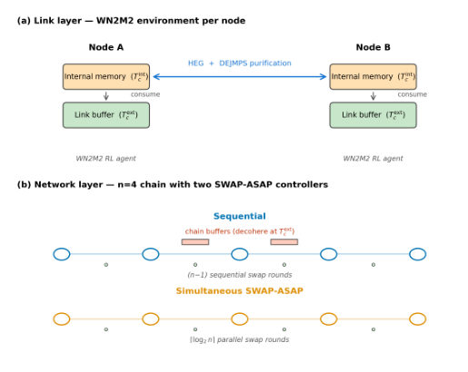
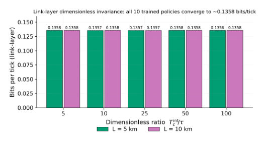

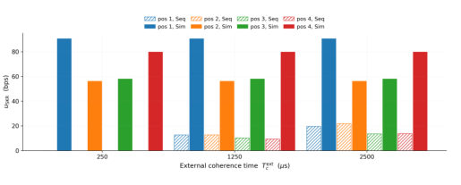
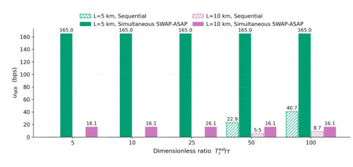
← Index · ← Previous · Next →
Authors: K. S. Rodríguez-Vigil, M. A. Bastarrachea-Magnani, J. I. Jiménez-Aquino
Type: theory · Category: statistical mechanics · PDF: https://arxiv.org/pdf/2605.03191v1
Analysis basis: full PDF text, analyzed in chunks
Topic relevance: Keldysh / 2PI / non-Gaussian methods 2/5 · methods for driven-dissipative 2/5 · non-equilibrium dynamics 2/5
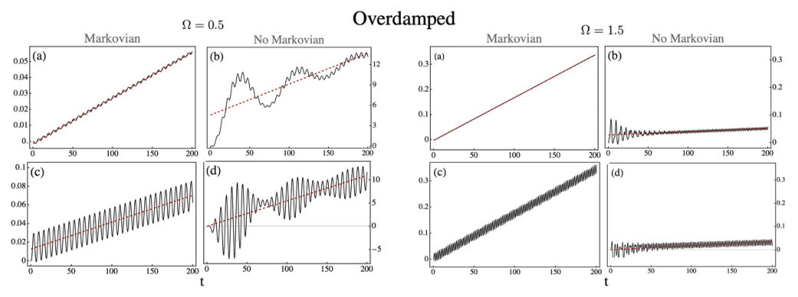
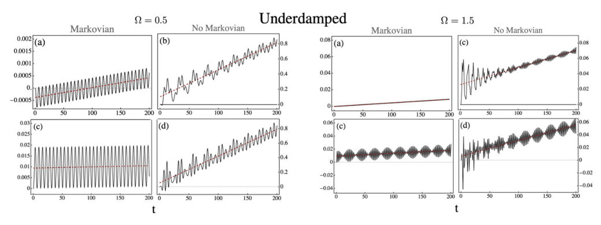
Summary. This paper proves that the Detailed Fluctuation Theorem holds for a non-Markovian system driven by an electric field that affects both the particle and the bath. It shows that the standard fluctuation-dissipation theorem remains valid even when an induced electric force is present. The study highlights how memory effects can lead to temporary energy backflow and negative entropy production.
Why it may be interesting. not directly relevant
Main problem. Investigating the validity of the Detailed Fluctuation Theorem (DFT) for total entropy production in a non-Markovian system driven by a time-dependent electric field.
Main result. The authors demonstrate that Kubo's second fluctuation-dissipation theorem remains unchanged despite induced electric forces, and prove the validity of the Detailed Fluctuation Theorem for total entropy production.
Method. The study uses the Zwanzig-Caldeira-Leggett model, Generalized Langevin Equations, and Laplace transforms to solve for the system's dynamics and probability density.
Model / system. A Brownian particle with charge Q in a harmonic potential, embedded in a charged fluid bath of harmonic oscillators, subjected to a time-dependent electric field.
Key observables. Total entropy production, average work, dissipated heat, and Gaussian probability density of position.
Important parameters / regimes. Electric field frequency (Omega), friction memory correlation time (tau_c), friction coefficient (gamma_0), and the overdamped vs. underdamped regimes.
Assumptions / limitations. The system is initially in thermal equilibrium, the potential is harmonic, and the induced force is approximated based on high-frequency bath oscillations.
Figures summary. Figure 1 shows the time behavior of the system in the overdamped regime under weak and high-frequency driving.
Paper structure. The paper begins with the derivation of the Generalized Langevin Equation from a Hamiltonian, proceeds to solve for the probability density and verify FDT invariance, then analyzes entropy production and work statistics, and concludes with the derivation of the Markovian limit.
Fluctuation theorems are key to understanding both fundamental and applied aspects of non-equilibrium thermodynamics of small systems. We study the non-Markovian entropy production fluctuation theorem for the diffusion process of charged particles in a gas inside a harmonic potential and under the action of a time-dependent electric field, using a generalized Langevin equation. By considering the influence of the electric field on both the tagged Brownian particle and the bath particles, an "induced" electric force arises. Despite the additional force, we demonstrate that Kubo's second fluctuation-dissipation theorem (FDT) remains unchanged. The FDT allows us to obtain the Gaussian probability density for the position along a single stochastic trajectory, which is the key to demonstrating the validity of the detailed fluctuation theorem (DFT) for the total entropy production. We study the specific result of an Ornstein-Uhlenbeck-type friction memory kernel and an oscillating electric field, and analyze the average work and entropy production in different parameter regimes.
Authors: Sumit Rout, Aravinth Balaji Ravichandran, Paweł Horodecki, Anubhav Chaturvedi
Type: theory · Category: statistical mechanics · PDF: https://arxiv.org/pdf/2605.04021v1
Analysis basis: full PDF text, analyzed in chunks
Topic relevance: entanglement & information structure 2/5 · non-equilibrium dynamics 2/5 · quantum measurements 2/5
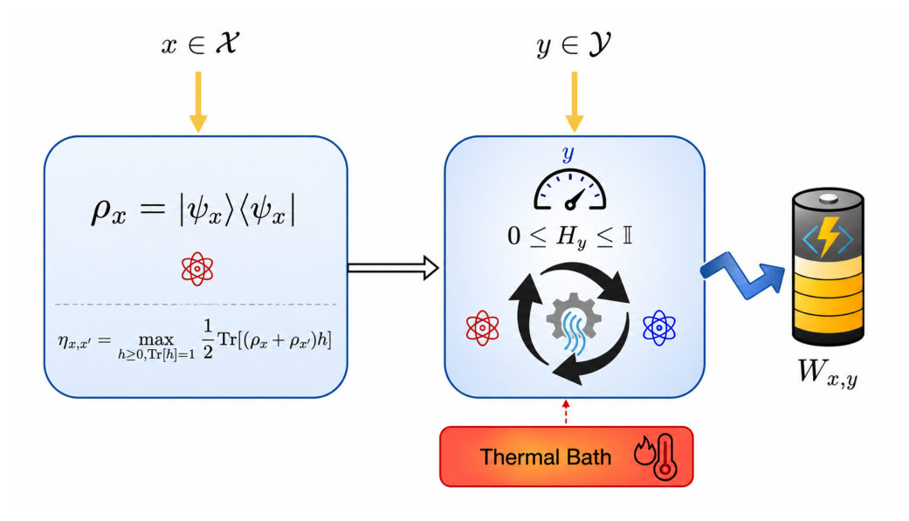
Summary. The paper proves that non-commuting Hamiltonian settings allow for a higher average work extraction across multiple processes than any possible commuting (classical) device. It establishes a new thermodynamic law and identifies Hamiltonian incompatibility as a fundamental resource for work extraction.
Why it may be interesting. This is highly relevant for researchers in open quantum systems and thermodynamics as it identifies a new way to certify quantum advantage using thermodynamic quantities rather than Bell inequalities, and treats non-commutativity as a quantifiable resource.
Main problem. Determining whether Hamiltonian incompatibility (non-commutativity) acts as a thermodynamic resource to extract more average work across multiple tasks than any classical (commuting) device can achieve.
Main result. The authors derive a universal classical average-work law and prove that incompatible Hamiltonians can exceed this limit, establishing Hamiltonian incompatibility as a fundamental thermodynamic resource.
Method. The study uses a thermodynamic framework involving nonequilibrium free-energy differences, quantum relative entropy, and geometric optimization over tracial noncommuting polynomials and Bloch-sphere geometries.
Model / system. A work-extraction task involving a black-box device queried with bounded Hamiltonians (0 <= H <= I) using a source of pure qubit preparations constrained by pairwise maximal-energy data.
Key observables. Average work (W_p), average-work advantage (Delta_av), and visibility (v).
Important parameters / regimes. Hamiltonian commutativity, visibility threshold (v_c), source geometry (theta), and reference energy averages (mu_j).
Assumptions / limitations. The preparations are assumed to be pure, and the work device is treated as a black box with no specific microscopic model or dimension restriction.
Figures summary. Figure 1 illustrates the work-extraction task, showing the flow from the constrained source to the work device and comparing the free-energy envelope to the commutativity constraint.
Paper structure. The paper introduces the work-extraction task, establishes the branch-wise free-energy benchmark, derives the classical average-work law for a minimal task, quantifies the quantum advantage, and analyzes the robustness of this advantage against noise and task complexity.
Free energy fixes the maximum work of a thermodynamic process once the state and Hamiltonian are specified. A work-extraction task asks a different question: how much average work can a single device realize across several preparations and Hamiltonian settings? A classical work device is one whose Hamiltonian settings are mutually commuting. We place every branch at its best free-energy-limited work envelope and derive the corresponding classical limit on the task average. For pure preparations, the source is specified only by pairwise maximal-energy constraints: for each pair, the intrinsic maximal average energy under one common normalized Hamiltonian is bounded as part of the task data, while the work device is otherwise microscopically unrestricted. The benchmark is optimized over arbitrary-dimensional classical implementations. Incompatible Hamiltonian settings exceed this limit, even though every branch remains bounded by its own free-energy maximum. The advantage therefore does not arise in any single process, but in the average work of the task: incompatible Hamiltonians realize a value that no classical work device can attain. Hamiltonian incompatibility is thus a thermodynamic resource for work extraction.
Authors: Alessandro Petrini, Raphaël Maire, Umberto Marini Bettolo Marconi, Lorenzo Caprini
Type: theory · Category: statistical mechanics · PDF: https://arxiv.org/pdf/2605.03404v1
Analysis basis: full PDF text, analyzed in chunks
Topic relevance: driven-dissipative phase transition 2/5 · non-equilibrium dynamics 2/5 · non-equilibrium universality 2/5
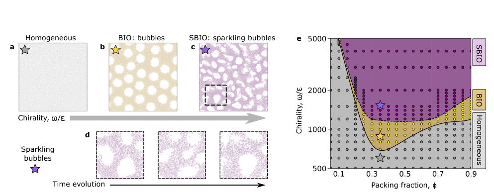
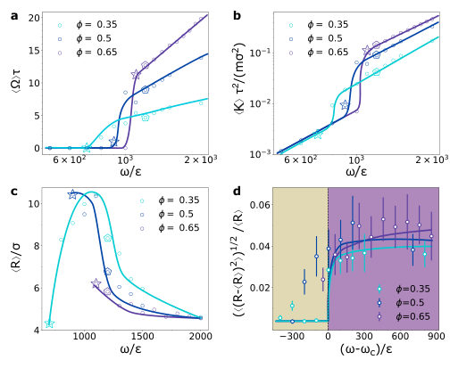
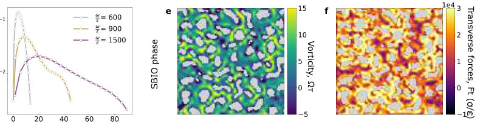
Summary. This paper identifies a new 'sparkling' phase in chiral active fluids where bubbles undergo continuous breakup and reformation. Driven by non-equilibrium transverse forces, this phase is explained through a hydrodynamic model showing that high chirality induces oscillations in bubble size. The findings provide a new way to understand complex, self-organizing patterns in active matter.
Why it may be interesting. not directly relevant
Main problem. The study investigates a novel, dynamically unstable phase in chiral active fluids called the 'sparkling bubble' (SBIO) phase, characterized by the continuous nucleation, deformation, and breakup of bubbles.
Main result. The authors discover that high chirality induces an underdamped oscillatory regime in bubble radii, leading to a 'sparkling' behavior where bubbles continuously merge and annihilate, distinct from the stable bubble (BIO) phase.
Method. The researchers use 2D numerical Langevin simulations of repulsive particles and develop a coarse-grained hydrodynamic theory, including a generalized Rayleigh-Plesset approach to model bubble evolution.
Model / system. A 2D inertial chiral active fluid composed of N repulsive particles interacting via a WCA potential and 'odd' transverse forces that break mirror symmetry.
Key observables. Vorticity, kinetic energy, bubble radius, normalized variance of bubble size, and the Minnaert frequency.
Important parameters / regimes. Chirality strength (omega/epsilon), packing fraction (phi), reduced temperature (Tr), and reduced inertial time (tau_I/tau).
Assumptions / limitations. Neglect of spatial gradients in the velocity field for steady-state evaluation, assumption of perfectly circular bubbles, and neglect of viscous and odd-viscous contributions in the momentum equation.
Figures summary. Figure 1 shows snapshots of the three phases (homogeneous, BIO, SBIO), time-series of bubble breakup, and a U-shaped phase diagram. Figure 2 plots vorticity, kinetic energy, and bubble radius against chirality, using bubble size variance as an order parameter. Figure 3 shows vorticity and related dynamics.
Paper structure. The paper introduces the SBIO phase, describes the microscopic Langevin model and hydrodynamic derivation, presents simulation results and phase diagrams, and concludes with a theoretical explanation of the bubble instability mechanism.
We study an inertial chiral active fluid, formed by repulsive particles that transfer angular momentum through odd interactions, i.e. transverse forces. Chirality induces an inhomogeneous phase, consisting of rotating bubbles, whose formation is favored at an optimal packing fraction. In this regime, we discover that bubbles may be dynamically unstable, breaking up and reforming in the steady state, thereby showing a spontaneous sparkling-like behavior reminiscent of supersaturated liquids. Bubbles and sparkling bubbles are predicted by a coarse-grained hydrodynamic theory, revealing the intrinsic non-linearity of these collective phenomena, and call for experimental verifications in granular spinners or spinning colloids.
Authors: Timothy J. Krogmeier, James Bradley, Anthony W. Schlimgen, Kade Head-Marsden
Type: both · Category: quantum information and computing · PDF: https://arxiv.org/pdf/2605.03177v1
Analysis basis: abstract only; PDF text extraction failed or PDF unavailable
Topic relevance: methods for driven-dissipative 2/5 · non-equilibrium dynamics 2/5 · spintronics-quantum-optics interface 2/5
Summary. This paper presents a method to pinpoint which nuclear spin pairs are responsible for dephasing in molecular qubits. By connecting experimental coherence data to specific spin interactions, the authors provide a workflow to design molecules with longer-lived quantum states. This is a significant step toward using molecular spins for practical quantum sensing and computing.
Why it may be interesting. It provides a practical framework for understanding open quantum system dynamics (non-Markovian dephasing) in a molecular platform, which is crucial for scaling molecular-based quantum computing.
Main problem. Identifying the specific sources of nuclear spin-spin dephasing in molecular qubits to improve electron spin coherence lifetimes.
Main result. The development of a computational workflow that connects experimental dephasing times to specific individual spin pairs, enabling strategic improvements to coherence.
Method. An electronic-structure enhanced, non-Markovian perturbative theoretical method used to analyze decoherence behavior.
Model / system. Two molecular qubit candidates with various ligands placed in different nuclear-spin containing solvents.
Key observables. Electron spin coherence lifetimes and dephasing times.
Important parameters / regimes. Low temperature regime; nuclear spin-spin interactions; spin-pair dephasing pathways.
Assumptions / limitations. The decoherence is dominated by spin-spin dephasing from nuclear spins within the molecule or the surrounding environment.
Paper structure. The paper introduces the problem of molecular spin dephasing, describes the analysis of two molecular qubit candidates, presents a new perturbative theoretical method, and concludes with a computational workflow for improving coherence.
Molecular spins offer promise in emerging quantum technologies such as quantum sensing and computing. At low temperatures, nuclear spin-spin interactions affect electron spin coherence lifetimes through pure dephasing. Nuclear-spin noise can originate from spin pairs within a molecule itself, pairs in a surrounding environment system, or pairs in which one spin is on the molecule and the other in the environment. Improving coherence times requires detailed knowledge of the dominant sources of dephasing. Here, we analyze the decoherence behavior of two molecular qubit candidates with various ligands and in different nuclear-spin containing solvents. We apply an electronic-structure enhanced, non-Markovian perturbative theoretical method to connect experimentally comparable dephasing times to individual spin pairs. This analysis allows the development of a computational workflow to strategically improve coherence lifetimes in spin systems where decoherence is dominated by spin-spin dephasing.
Authors: Antonino Di Piazza, Kenan Qu
Type: theory · Category: other · PDF: https://arxiv.org/pdf/2605.04011v1
Analysis basis: full PDF text, analyzed in chunks
Topic relevance: Keldysh / 2PI / non-Gaussian methods 2/5 · non-equilibrium dynamics 2/5 · interference shaping light 1/5
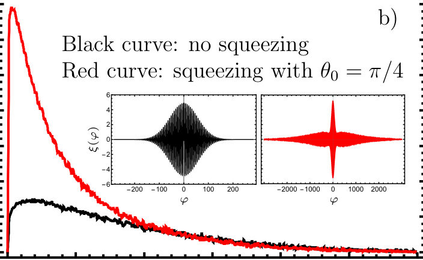
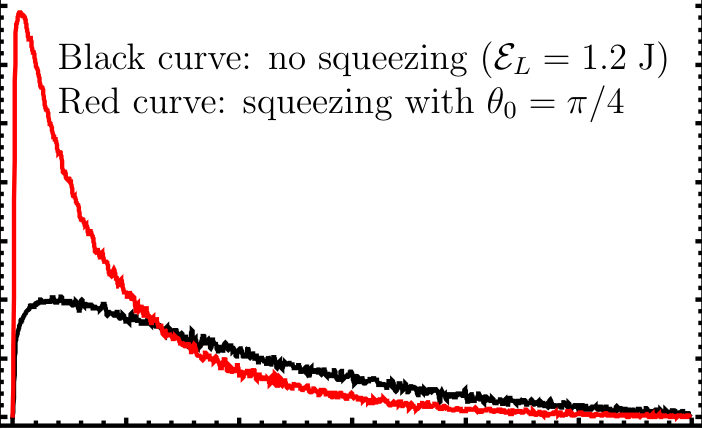
Summary. This paper explores how using squeezed light as a background laser field can control the radiation emitted during nonlinear Compton scattering. It demonstrates that the squeezing angle can be tuned to either enhance or suppress the photon yield and energy spectrum. This provides a new mechanism for controlling high-energy radiation processes using quantum optical techniques.
Why it may be interesting. not directly relevant
Main problem. Investigating how the squeezing of a background electromagnetic field can be used as a control parameter to alter the radiation spectrum and photon yield in nonlinear Compton scattering.
Main result. The authors show that squeezing in the background field effectively acts as a frequency modulation, which can significantly enhance or suppress the emitted photon energy spectrum and total photon yield depending on the squeezing angle.
Method. The study uses the Furry picture of strong-field QED and a numerical kinetic approach to simulate the collision of ultrarelativistic electrons with a squeezed coherent plane-wave field.
Model / system. An ultrarelativistic electron beam colliding with a strong, frequency-modulated electromagnetic plane wave modeled as a squeezed coherent state.
Key observables. Differential energy spectrum of emitted photons (dE/domega), total photon yield, and total emitted energy per electron.
Important parameters / regimes. Quantum nonlinearity parameter (chi_0), nonlinearity parameter (xi_0), squeezing amplitude (zeta_0), squeezing angle (theta_0), and Schwinger field (F_cr).
Assumptions / limitations. Quantum fluctuations induced by squeezing are assumed to be negligible; the background field is treated as a classical external field (no depletion); and the electron dynamics are treated in a one-dimensional approximation.
Figures summary. Figure 1 shows the differential energy spectra for different squeezing angles and the evolution of the nonlinearity parameter; Figure 2 compares the spectrum of a squeezed pulse to a non-squeezed pulse of equal total energy.
Paper structure. The paper introduces the problem of nonlinear Compton scattering in squeezed fields, develops the theoretical framework using the Furry picture, demonstrates the equivalence of squeezing to frequency modulation, provides numerical simulations of electron-laser collisions, and concludes with an analysis of enhancement and suppression effects.
When an electron is accelerated, it emits radiation. In the relativistic quantum realm the elementary radiation process is the emission of a single photon, a process known as nonlinear Compton scattering in the case of an electron moving in the presence of a strong electromagnetic wave. This process is typically described within the Furry picture, where the electromagnetic wave is described as a classical background field and the electron-positron field is quantized in the presence of that background field. Equivalently one can quantize the electron-positron field in the vacuum but then the photon emission process is described as a transition from an initial state to a final state both featuring, apart from the electron (the initial state) and the electron and the photon (the final state), the same coherent state of photons appropriately related to the electromagnetic wave. Here, we consider a more general situation where the initial and the final state feature the same squeezed coherent state. Then, we specialize to the case where the coherent state corresponds to a plane-wave field and the mostly populated modes of the coherent state are also squeezed. We show that, when quantum fluctuations induced by the squeezing in the coherent field are negligible, a condition well satisfied at available squeezing levels, the squeezing effects effectively reduce to a frequency modulation of the plane-wave field corresponding to the coherent state. By means of numerical examples we show that at already available squeezing levels the emission spectrum of nonlinear Compton scattering and the total photon yield can be altered significantly. Analytical explanations of the main numerical results are also provided.
Authors: J. Sumaya-Martinez
Type: theory · Category: quantum information and computing · PDF: https://arxiv.org/pdf/2605.03958v1
Analysis basis: full PDF text, analyzed in chunks
Topic relevance: entanglement & information structure 2/5 · quantum measurements 2/5
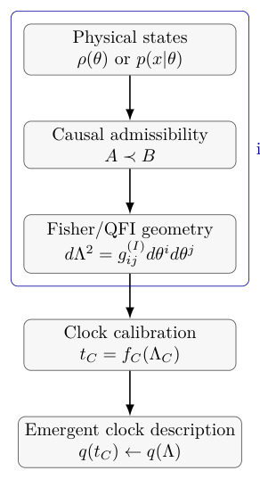
Summary. This paper proposes that time is not a fundamental background parameter but an emergent property reconstructed from the accumulation of physical distinguishability. By using Fisher information geometry, the author shows how clock time can be calibrated from the measurable differences between causally ordered states. This offers a new perspective on the relationship between information, dynamics, and the arrow of time.
Why it may be interesting. It provides a deep information-geometric reinterpretation of quantum speed limits and the Schrödinger equation, linking the rate of state evolution directly to energy uncertainty and distinguishability.
Main problem. The fundamental nature of time and the 'problem of time' in quantum gravity, specifically whether time is a fundamental substance or an emergent property.
Main result. Proposes that clock time is an emergent calibration derived from the accumulation of Fisher distinguishability along causally ordered physical trajectories.
Method. Uses information geometry, specifically the Fisher information metric, Quantum Fisher Information (QFI), and the Fubini-Study metric, to define an informational parameter Lambda_F.
Model / system. The framework applies to classical statistical systems, quantum systems (using density operators and Hilbert space geometry), qubit clocks, and cosmological evolution.
Key observables. Fisher-informational parameter (Lambda_F), energy uncertainty (Delta H), and Fisher distinguishability per tick (eta_C).
Important parameters / regimes. Lambda_F (accumulated Fisher distance), g_ij (Fisher metric), and the energy uncertainty (Delta H) which governs the rate of distinguishability accumulation.
Assumptions / limitations. Assumes that only physically distinguishable changes have operational meaning, changes must follow a causal order, and clock time requires a monotonic mapping from the accumulated distance.
Figures summary. A conceptual flowchart illustrating the hierarchy from physical states and causal admissibility to Fisher geometry and emergent clock description.
Paper structure. The paper identifies the problem of time, proposes a causal-geometric framework based on distinguishability, establishes mathematical postulates, demonstrates applications in quantum and classical systems (including qubit clocks and decay), and situates the work within the context of existing relational and thermal time theories.
We develop a Fisher-informational reformulation of physical time in which clock time is not regarded as a fundamental ontological substance, but as an emergent calibration of causally ordered distinguishability among physical states. The operational starting point is that clocks do not measure time itself; rather, they instantiate reproducible physical processes whose distinguishable states are correlated with other events. We introduce a causal-informational parameter, denoted by Lambda_F, defined as an accumulated Fisher-geometric distance along a causally admissible trajectory in state space. In classical statistical systems, this parameter is generated by the Fisher information metric; in quantum systems, the corresponding construction is associated with quantum Fisher information, the Bures metric, and the Fubini-Study geometry of projective Hilbert space. The manuscript distinguishes model-dependent Fisher information from quantum Fisher information, clarifies the reparameterization of Schrodinger dynamics, and gives explicit examples involving a qubit clock, an exponential decay process, and a Fisher characterization of clock quality. The proposal is positioned relative to relational time, the Page-Wootters mechanism, thermal time, quantum speed-limit relations, information geometry, and the problem of time in quantum gravity. We do not claim that relational or emergent time is new. The specific contribution is the use of Fisher distinguishability as an operational precursor from which ordinary clock time can be reconstructed. In this sense, the central statement of the paper is: time is not measured by clocks; clock time is reconstructed from the Fisher distinguishability accumulated along causally ordered physical changes.
Authors: Priyam Srivastava, Akshat R. Sabavat, Siddharth Jain, Alan Scheller-Wolf, Sridhar Tayur, David Tipper, Prashant Krishnamurthy, Amy Babay, Kaushik P. Seshadreesan
Type: theory · Category: quantum information and computing · PDF: https://arxiv.org/pdf/2605.04047v1
Analysis basis: full PDF text, analyzed in chunks
Topic relevance: entanglement & information structure 2/5 · methods for driven-dissipative 2/5




Summary. This paper demonstrates that the performance disadvantage of connection-less quantum networks is not a fundamental architectural limitation but rather a consequence of current-day hardware constraints regarding memory coherence. By using reinforcement learning to optimize link-layer control, the authors show that as memory coherence improves, sequential swapping protocols become as efficient as simultaneous ones.
Why it may be interesting. This is highly relevant for researchers in quantum optics and open quantum systems as it quantifies how environmental decoherence (memory decay) fundamentally dictates the operational limits and architectural choices for scalable quantum communication networks.
Main problem. The study compares the performance of sequential (connection-less) versus simultaneous (connection-oriented) entanglement swapping protocols in quantum networks, specifically investigating if the performance penalty in sequential swapping is a fundamental flaw or a transient effect of low memory coherence.
Main result. The researchers find that the performance gap is a near-term phenomenon tied to low memory coherence; at high coherence levels, both protocols are statistically equivalent, and the sequential protocol only collapses when the coherence-to-latency ratio falls below a critical threshold.
Method. A two-layer simulation framework is used where the link layer is controlled by a reinforcement-learning policy (WN2M2) and the network layer implements different swapping protocols, followed by a parameter sweep of external memory coherence time.
Model / system. A multi-hop quantum network chain (n=4 links) consisting of nodes with internal memories and external buffers, utilizing Werner states subject to depolarizing decay and a six-state QKD protocol.
Key observables. Per-pair efficiency (uSKR) in bits per heralding tick, end-to-end entanglement delivery rates, and the dimensionless ratio of external coherence time to heralding latency (T_c_ext/tau).
Important parameters / regimes. External memory coherence time (T_c_ext), per-link heralding latency (tau), link lengths (5 km and 10 km), and the number of links (n=4).
Assumptions / limitations. Local operations (gates, measurements, readout) are assumed to be instantaneous and noiseless; the link-layer RL policy is held fixed to isolate network-layer variables.
Figures summary. Figure 1 illustrates the two-layer architecture; Figure 2 shows the convergence of trained RL policies; Figure 3 compares uSKR vs. coherence time showing the sequential protocol collapse; Figures 7 and 8 demonstrate protocol equivalence in symmetric and bottleneck topologies at high coherence.
Paper structure. The paper introduces the two-layer architecture, defines the link-layer RL policy and network-layer protocols, presents a systematic sweep of coherence regimes, analyzes the mechanism of protocol failure, and concludes with a comparison of different network topologies.
Connection-less, packet-switched quantum network architectures distribute entanglement across multi-hop paths through sequential entanglement swapping, in which each node acts on purely local state information. The architectural advantages over the connection-oriented alternative -- simultaneous SWAP-ASAP -- are compelling, but sequential swapping holds partial chains in intermediate buffers between successive swaps, exposing them to memory decoherence in a way simultaneous SWAP-ASAP avoids by design. We present a proof-of-principle study at fixed chain length $n = 4$ in which each elementary link is governed by a fixed reinforcement-learning policy optimizing the secret-key rate of the six-state protocol, leaving the network-layer protocol as the sole independent variable. Sweeping the network-layer memory coherence time $T_c^{\mathrm{ext}}$ over four orders of magnitude reveals a clear regime structure governed by the dimensionless ratio $T_c^{\mathrm{ext}}/τ$, where $τ$ is the per-link entanglement heralding latency. Simultaneous SWAP-ASAP delivers a constant rate across the full sweep. Sequential swapping, by contrast, collapses to zero end-to-end deliveries below $T_c^{\mathrm{ext}}/τ= 25$, and begins recovering at $T_c^{\mathrm{ext}}/τ= 50$. It remains limited by the simultaneous rate, which it saturates only at the relaxed end of the sweep. These results suggest that the connection-less penalty is a near-term phenomenon tied to present-day memory coherence rather than a fundamental property of sequential swapping.
Authors: Kean Chen, Minbo Gao, Tongyang Li, Qisheng Wang, Xinzhao Wang
Type: theory · Category: quantum information and computing · PDF: https://arxiv.org/pdf/2605.03685v1
Analysis basis: full PDF text, analyzed in chunks
Topic relevance: entanglement & information structure 2/5 · quantum measurements 1/5
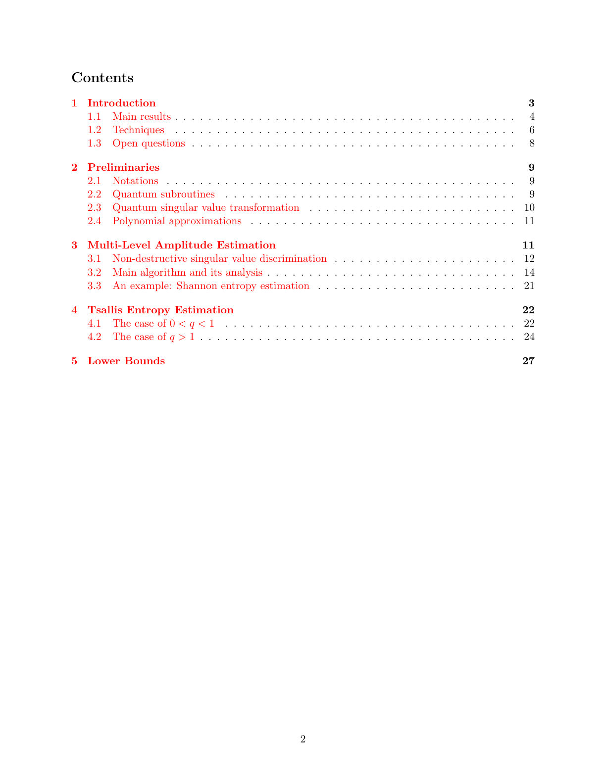
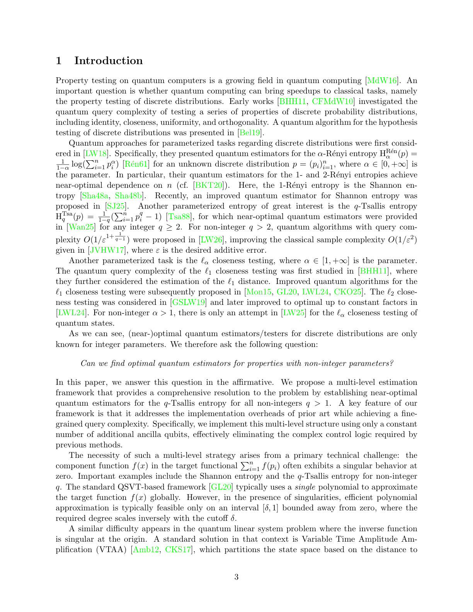
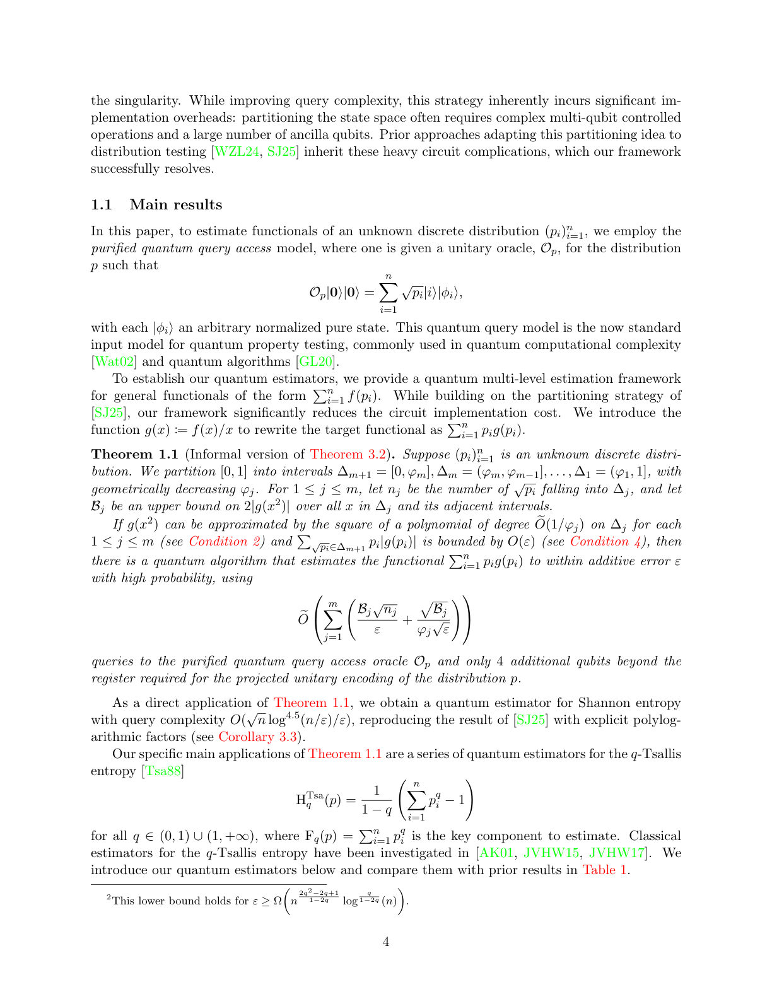
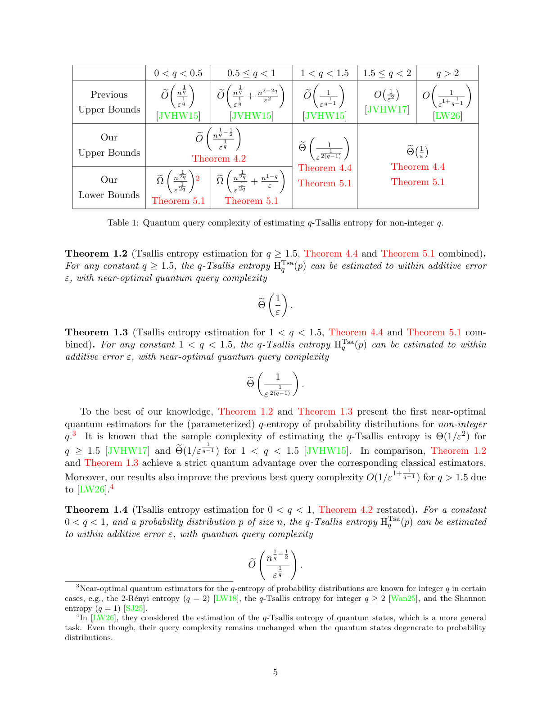
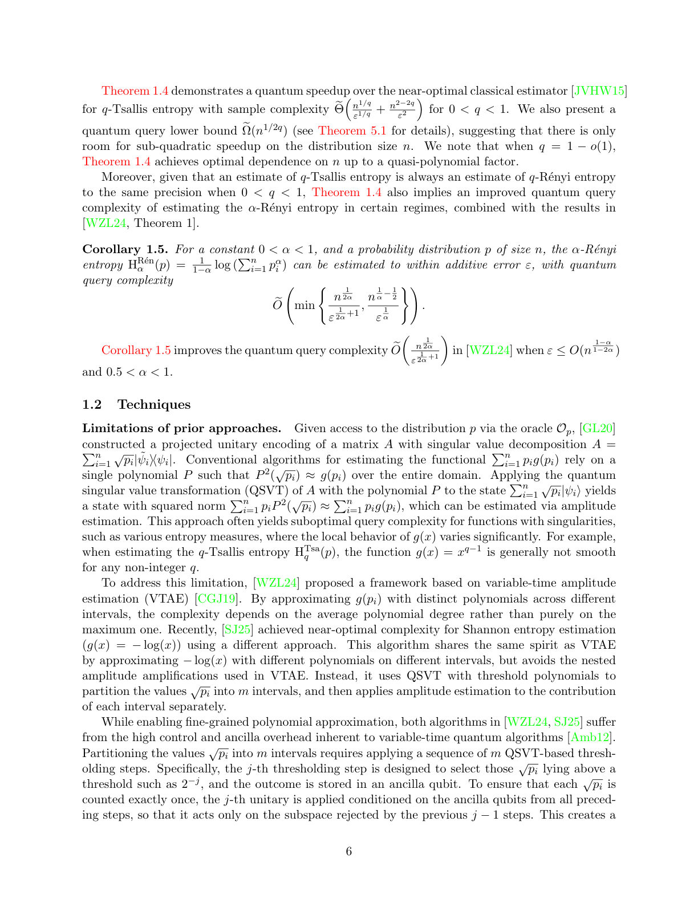
Summary. This paper introduces a new quantum algorithm for estimating complex functions of probability distributions, such as various types of entropy. It achieves near-optimal efficiency for many cases while using much fewer extra qubits and simpler control logic than previous methods.
Why it may be interesting. not directly relevant
Main problem. Developing efficient quantum algorithms for estimating functionals of discrete probability distributions, particularly those with singularities like q-Tsallis and Shannon entropies.
Main result. The authors propose a multi-level estimation framework that achieves near-optimal quantum query complexity for q-Tsallis entropy for q > 1 and provides a quantum speedup for 0 < q < 1, while significantly reducing ancilla and control overhead.
Method. A multi-level framework using logarithmic partitioning of the probability space, non-destructive singular value discrimination, and Quantum Singular Value Transformation (QSVT) for local polynomial approximation.
Model / system. A purified quantum query access model where a unitary oracle provides access to the square roots of the probabilities of a discrete distribution.
Key observables. q-Tsallis entropy, Shannon entropy, alpha-Renyi entropy, and general functionals of the form sum(p_i * g(p_i)).
Important parameters / regimes. The parameter q (for Tsallis/Renyi entropy), the precision epsilon, the distribution size n, and the interval partitioning ratio rho.
Assumptions / limitations. Requires purified quantum query access, the existence of suitable polynomial approximations for the target function, and that the matrix norm is bounded.
Figures summary. Table 1 compares the quantum query complexity of estimating q-Tsallis entropy across various ranges of q against previous classical and quantum results.
Paper structure. The paper introduces a multi-level estimation framework, details the technical implementation using non-destructive discrimination and QSVT, provides complexity analysis for various entropy regimes (Shannon, Tsallis, Renyi), and establishes matching lower bounds via sample-to-query lifting.
We propose a quantum multi-level estimation framework for a functional $\sum_{i=1}^n f(p_i)$ of a discrete distribution $(p_i)_{i=1}^n$. We partition the values $p_i$ into logarithmically many intervals whose length decays exponentially. For each interval, we perform non-destructive singular value discrimination to isolate the relevant $p_i$, enabling adaptive estimation of the partial sum over this interval. Unlike previous variable-time approaches, our method avoids high control overhead and requires only constant extra ancilla qubits. As an application, we present efficient quantum estimators for the $q$-Tsallis entropy of discrete distributions. Specifically: (i) For $q > 1$, we obtain a near-optimal quantum algorithm with query complexity $\tildeΘ(1/\varepsilon^{\max\{1/(2(q-1)), 1\}})$, improving the prior best $O(1/\varepsilon^{1+1/(q-1)})$ due to Liu and Wang (SODA 2025; IEEE Trans. Inf. Theory 2026). (ii) For $0 < q < 1$, we obtain a quantum algorithm with query complexity $\tilde{O}(n^{1/q-1/2}/\varepsilon^{1/q})$, exhibiting a quantum speedup over the near-optimal classical estimators due to Jiao, Venkat, Han, and Weissman (IEEE Trans. Inf. Theory 2017). Our results achieve, to our knowledge, the first near-optimal quantum estimators for parameterized $q$-entropy for non-integer $q$.
Authors: Qi Chen, Hao-Xuan Luo, Jin-Kang Guo, Qian-Qian Hong, Li-Bao Fan, Chuan-Cun Shu
Type: theory · Category: other · PDF: https://arxiv.org/pdf/2605.03461v1
Analysis basis: abstract only; PDF text extraction failed or PDF unavailable
Topic relevance: quantum measurements 2/5
Summary. This paper presents an analytical method for performing high-fidelity single-qubit gates in ultracold NaCs molecules using a simple two-pulse sequence. By using a Magnus expansion, the authors achieve gate fidelities exceeding 0.9999. The approach also allows for easy gate tomography through molecular orientation detection.
Why it may be interesting. It provides a highly accurate, analytical method for controlling molecular qubits, which is crucial for building scalable molecular quantum processors and understanding coherent dynamics in rotational states.
Main problem. The practical implementation of universal single-qubit gates in ultracold molecules is hindered by complex control protocols and sensitivity to experimental imperfections.
Main result. The authors developed an analytical framework using an optimized two-pulse sequence that achieves gate fidelities above 0.9999 and enables practical gate tomography.
Method. The researchers employ a first-order Magnus expansion to derive closed-form unitary evolution from a two-pulse sequence, establishing precise amplitude and phase conditions.
Model / system. The system consists of ultracold NaCs molecules where qubits are encoded in the lowest rotational energy levels.
Key observables. Time-dependent molecular orientation and gate truth tables via weak-field polarization detection.
Important parameters / regimes. Gate fidelities above 0.9999; rotation amplitudes and phases.
Assumptions / limitations. The derivation relies on a first-order Magnus expansion approximation.
Paper structure. The paper introduces the problem of gate control, presents an analytical framework using Magnus expansion, demonstrates high-fidelity single-qubit and multi-gate sequences, and discusses applications for gate tomography and scalability.
Complex control protocols and sensitivity to experimental imperfections have limited the practical implementation of quantum gate operations. Here, we present an analytical framework for universal single-qubit gates using rotational states of ultracold NaCs molecules. By encoding qubits in the lowest rotational energy levels, we employ a first-order Magnus expansion to derive closed-form unitary evolution from an optimized two-pulse sequence. This approach establishes precise amplitude and phase conditions for arbitrary single-qubit rotations, achieving gate fidelities above 0.9999 in numerical simulations. We further demonstrate that complex multi-gate sequences, including phase-locked operations, can be executed with minimal population leakage into auxiliary states. The time-dependent molecular orientation is shown to faithfully encode both the gate truth table and coherence dynamics, enabling practical gate tomography via weak-field polarization detection. Our analytical method is also applicable to other molecules and physical platforms, offering a potential path to high-fidelity, scalable molecular quantum processors.
Authors: Marten Folkertsma, Lorenzo Grevink, Jonas Helsen, Alicja Dutkiewicz
Type: theory · Category: quantum information and computing · PDF: https://arxiv.org/pdf/2605.03023v1
Analysis basis: full PDF text, analyzed in chunks
Topic relevance: entanglement & information structure 2/5
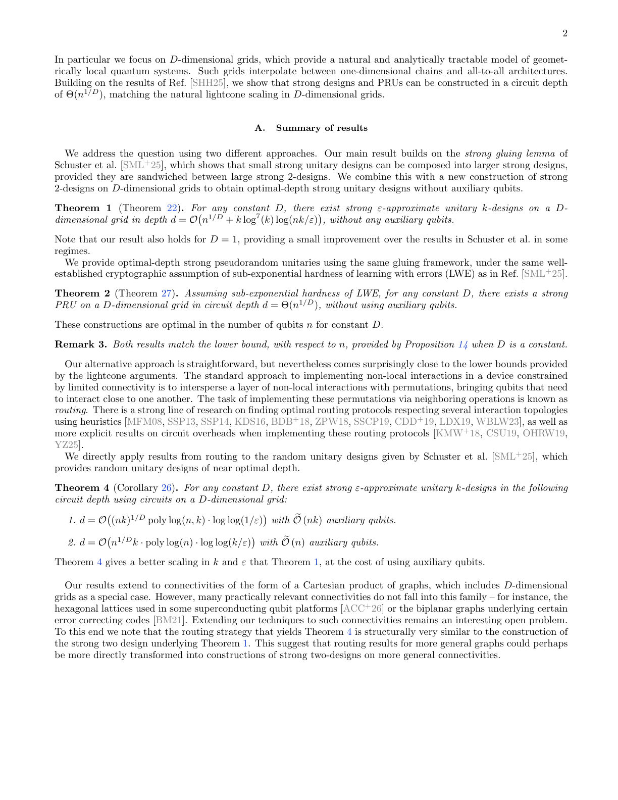
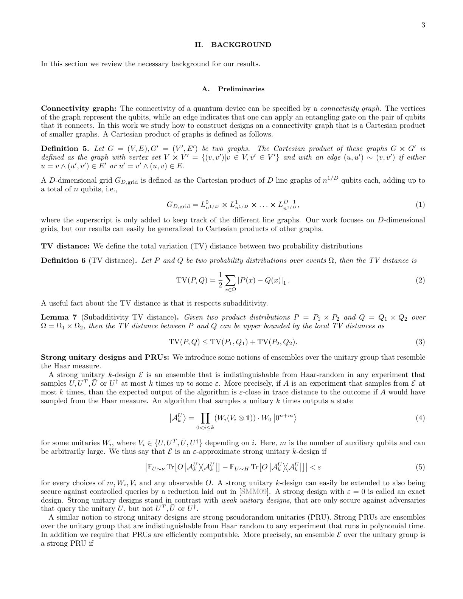
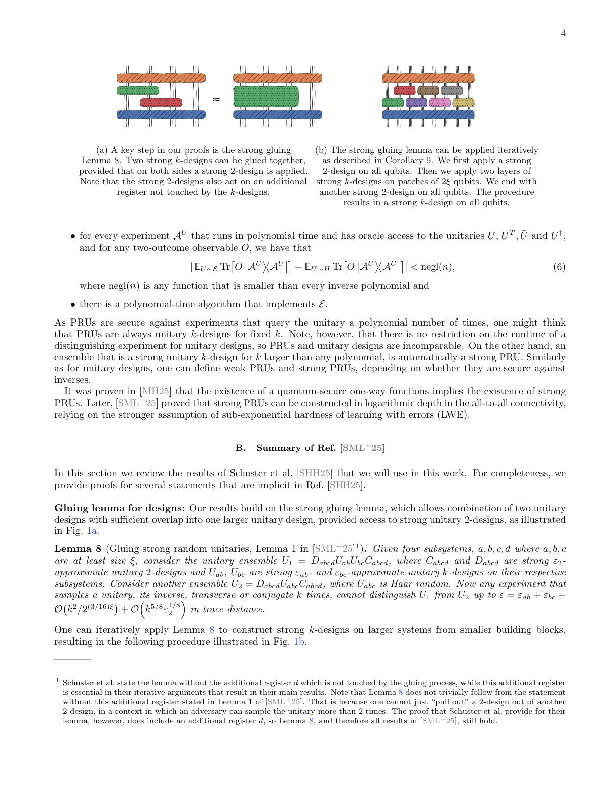
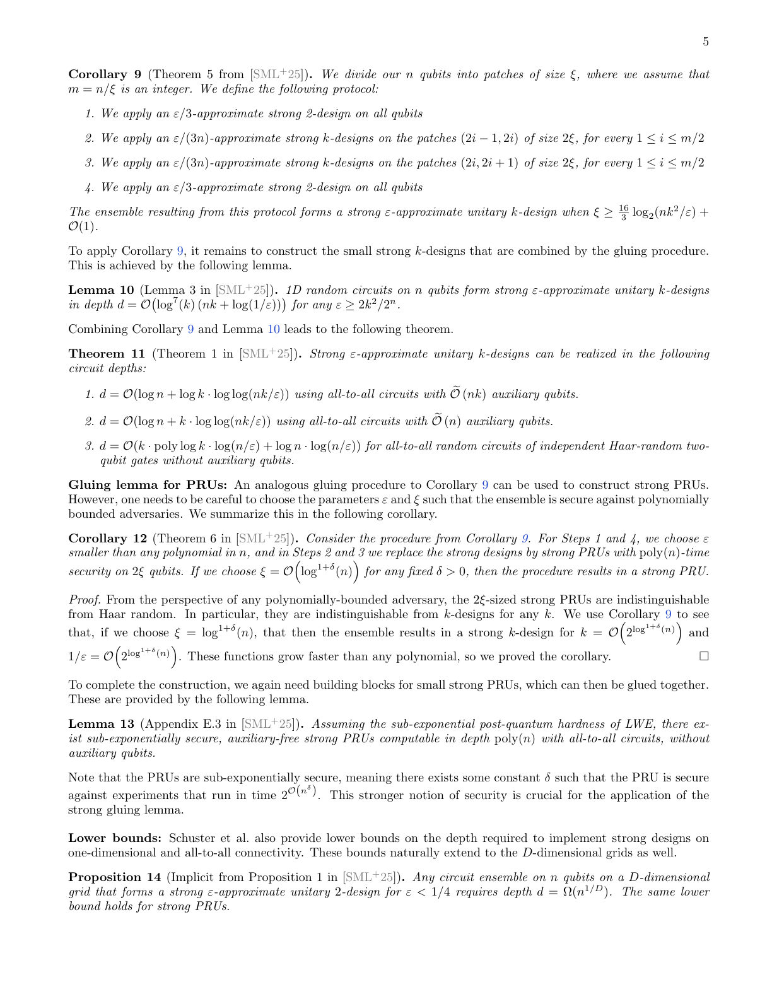
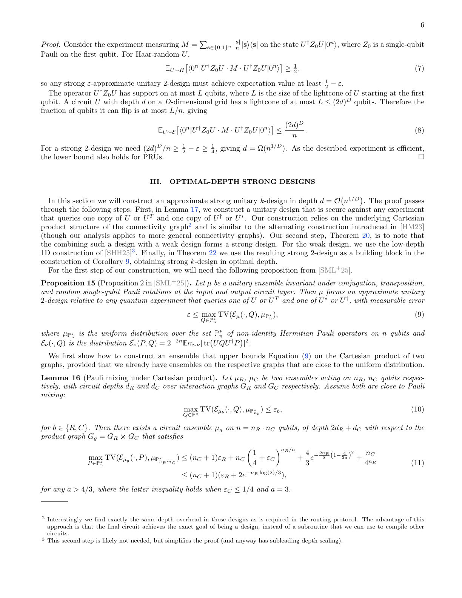
Summary. This paper provides efficient methods for building high-quality random quantum circuits on constrained hardware architectures. It achieves optimal circuit depth scaling for unitary k-designs on D-dimensional grids and shows that pseudorandom unitaries can be implemented with polylogarithmic depth.
Why it may be interesting. not directly relevant
Main problem. Determining the minimum circuit depth required to construct strong unitary k-designs and strong pseudorandom unitaries (PRUs) on quantum architectures with limited, geometric connectivity.
Main result. The authors provide two constructions for strong k-designs on D-dimensional grids, including one with provably optimal depth of O(n^(1/D)), and demonstrate that strong PRUs can be constructed with polylogarithmic depth.
Method. The paper uses a 'strong gluing lemma' to compose small designs into larger ones and employs general routing theory to map all-to-all connectivity designs onto arbitrary grid-like graphs.
Model / system. Quantum circuits acting on n qubits arranged in D-dimensional grids or more general Cartesian products of graphs, representing architectures like superconducting qubits, silicon quantum dots, and NV centers.
Key observables. Circuit depth (d), Total Variation (TV) distance, and trace distance between the constructed ensemble and the Haar measure.
Important parameters / regimes. Number of qubits (n), dimension of the grid (D), design strength (k), approximation error (epsilon), and the Learning with Errors (LWE) hardness assumption.
Assumptions / limitations. The construction of strong PRUs assumes the sub-exponential post-quantum hardness of the Learning with Errors (LWE) problem; certain routing-based constructions require a large number of auxiliary qubits.
Paper structure. The paper introduces the problem of depth scaling for k-designs, presents a direct construction using a gluing lemma for optimal depth, provides a routing-based construction for arbitrary connectivity, and concludes with the construction of strong PRUs and discussion of complexity trade-offs.
We study the problem of constructing strong approximate unitary $k$-designs on $D$-dimensional grids (and more generally on Cartesian products of graphs), building on the work of Schuster et al. arXiv:2509.26310 which establishes strong unitary designs in 1D and in all-to-all connectivity. We provide two constructions. The first construction leverages the existing all-to-all connectivity result with general routing theory to provide flexible (but slightly suboptimal) strong $k$-designs in arbitrary connectivities. The second construction is more direct, requires no auxiliaries and has provably optimal depth (in the number of qubits $n$) for $D$-dimensional grids with constant dimension. Combining these techniques also allows us to construct strong pseudorandom unitaries on $D$-dimensional grids with provably optimal depth.
Authors: David González Méndez, Rubén Gómez González, Vicente Garzó
Type: theory · Category: statistical mechanics · PDF: https://arxiv.org/pdf/2605.03455v1
Analysis basis: full PDF text, analyzed in chunks
Topic relevance: non-equilibrium dynamics 2/5
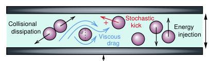

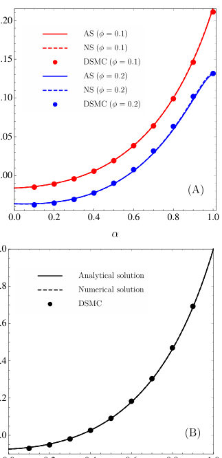
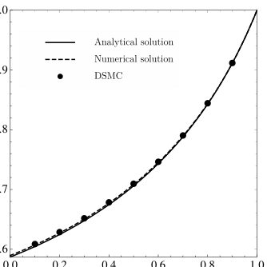
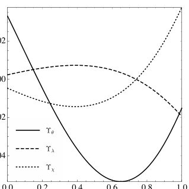
Summary. This paper demonstrates that an interstitial gas phase significantly changes the transport properties of granular fluids, challenging previous models that ignored gas-induced friction and noise. By using kinetic theory and DSMC simulations, the authors provide a complete hydrodynamic description of the system's viscosity, conductivity, and stability.
Why it may be interesting. not directly relevant
Main problem. The study investigates how an interstitial gas phase, modeled via viscous drag and stochastic forces, alters the transport coefficients and stability of a confined quasi-two-dimensional granular fluid.
Main result. The presence of the gas phase significantly modifies the Navier-Stokes transport coefficients (viscosity and thermal conductivity) compared to dry systems, and the homogeneous steady state is found to be linearly stable.
Method. The authors use the Chapman-Enskog method applied to the Enskog kinetic equation, employing a Sonine polynomial expansion for analytical derivations and Direct Simulation Monte Carlo (DSMC) for numerical validation.
Model / system. A quasi-two-dimensional granular fluid of hard disks/spheres at moderate densities, modeled using the delta-model for energy injection via collisions and a Langevin-like term for gas-particle interactions.
Key observables. Shear viscosity, bulk viscosity, thermal conductivity, heat diffusive coefficient, cooling rate, steady temperature, and kurtosis.
Important parameters / regimes. Coefficient of restitution (alpha), solid volume fraction (phi), friction coefficient (gamma), energy injection parameter (Delta), and background gas temperature (Tb).
Assumptions / limitations. The model assumes a monocomponent fluid, focuses on the steady-state regime, neglects the gas phase's effect on the actual grain collision dynamics, and uses a first-order Sonine approximation.
Figures summary. Figure 1 shows a schematic of the system; Figure 2 plots steady temperature vs. inelasticity; Figure 3 shows kurtosis dependence on restitution and density; Figures 5-8 present scaled transport coefficients (viscosity, conductivity, etc.) vs. alpha and density; Figure 10 shows stability eigenvalues.
Paper structure. The paper defines the physical model and collision rules, establishes the Enskog kinetic framework, characterizes the homogeneous steady state, derives hydrodynamic transport coefficients via Chapman-Enskog expansion, and concludes with a linear stability analysis.
This paper investigates the dynamic properties of a confined quasi-two-dimensional granular fluid at moderate densities, modeled within the framework of the Enskog kinetic equation. The system is described using the so-called $Δ$-model, which incorporates energy injection through modified collision rules, and is further extended to account for the influence of an interstitial gas via a viscous drag force and a stochastic Langevin-like term. By applying the Chapman-Enskog method, the Navier-Stokes transport coefficients and the cooling rate are derived analytically considering the leading terms in a Sonine polynomial expansion. The study focuses on steady-state conditions and examines how the combined effects of inelastic collisions and external driving influence transport properties such as the viscosity and the thermal conductivity. Theoretical predictions for the steady temperature and the kurtosis are validated against direct simulation Monte Carlo (DSMC) results, showing excellent agreement. The findings reveal that the external driving significantly alters the transport coefficients compared to dry (no gas phase) granular systems, challenging previous assumptions that neglected these effects. Additionally, a linear stability analysis demonstrates that the homogeneous steady state is stable across the explored parameter space.
Authors: Sergey Mironov, Andrey Morozov
Type: theory · Category: quantum information and computing · PDF: https://arxiv.org/pdf/2605.04016v1
Analysis basis: full PDF text, analyzed in chunks
Topic relevance: entanglement & information structure 2/5
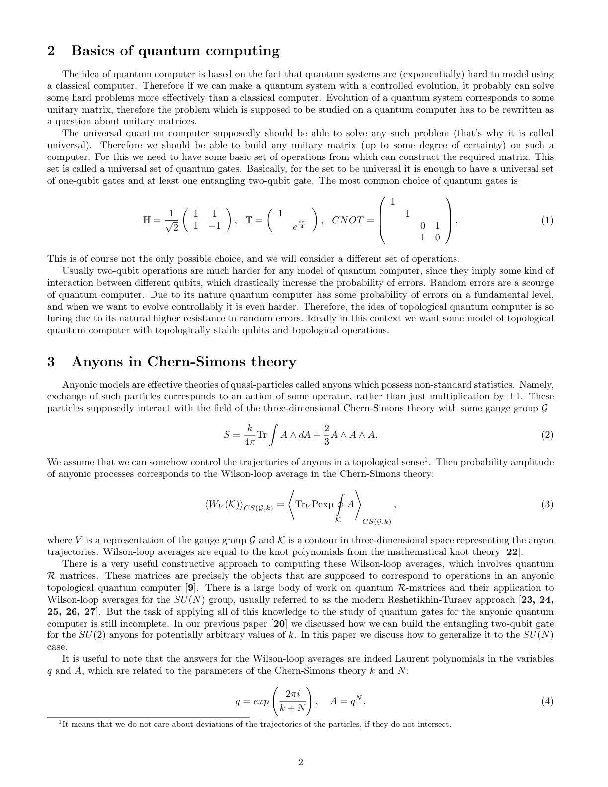
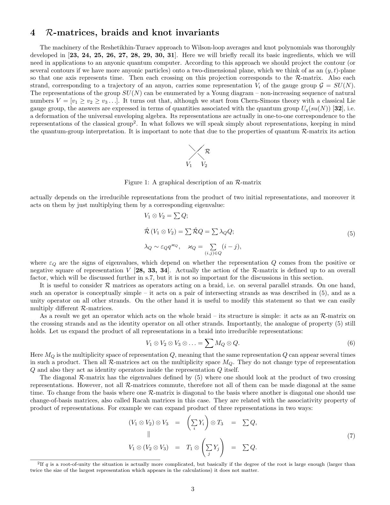
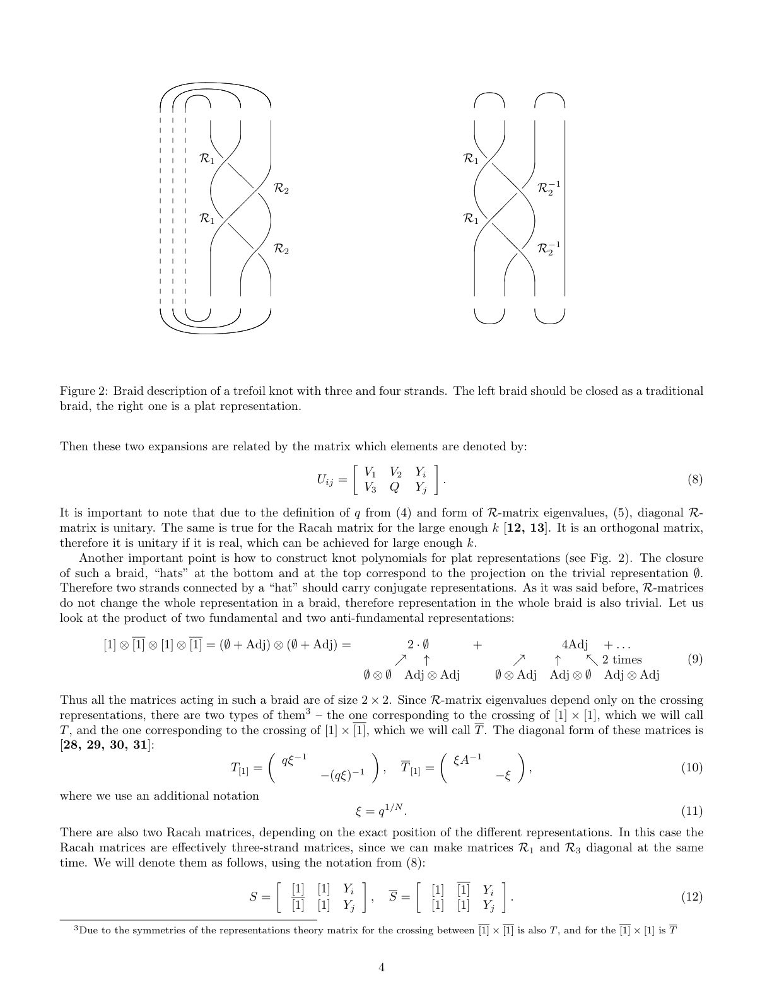
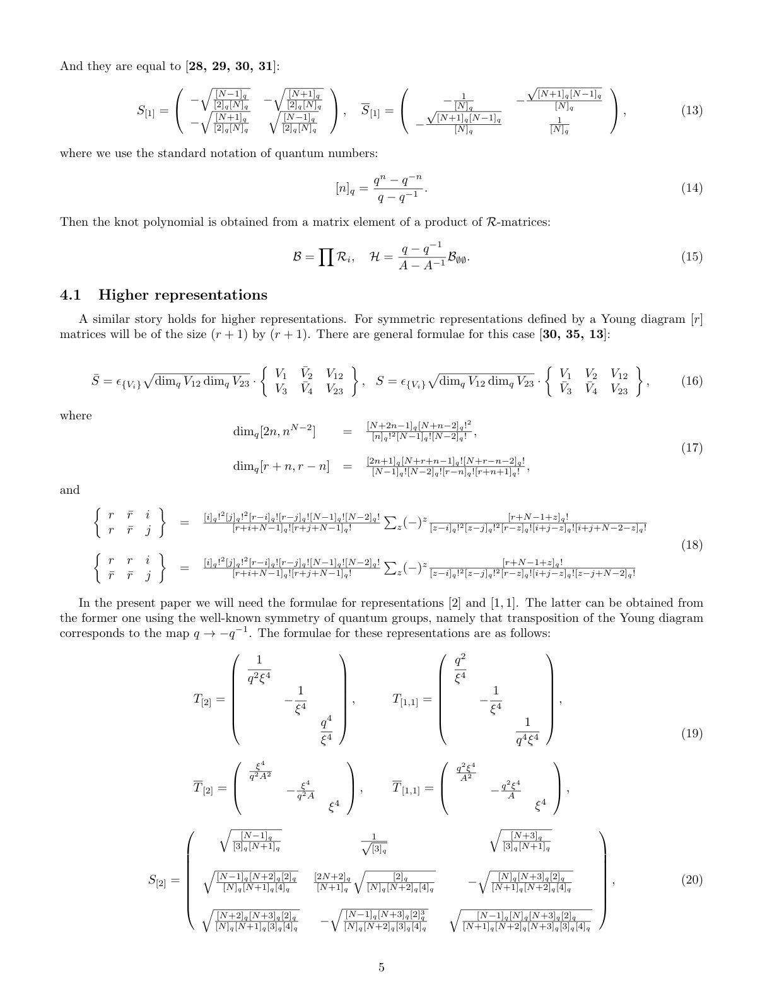
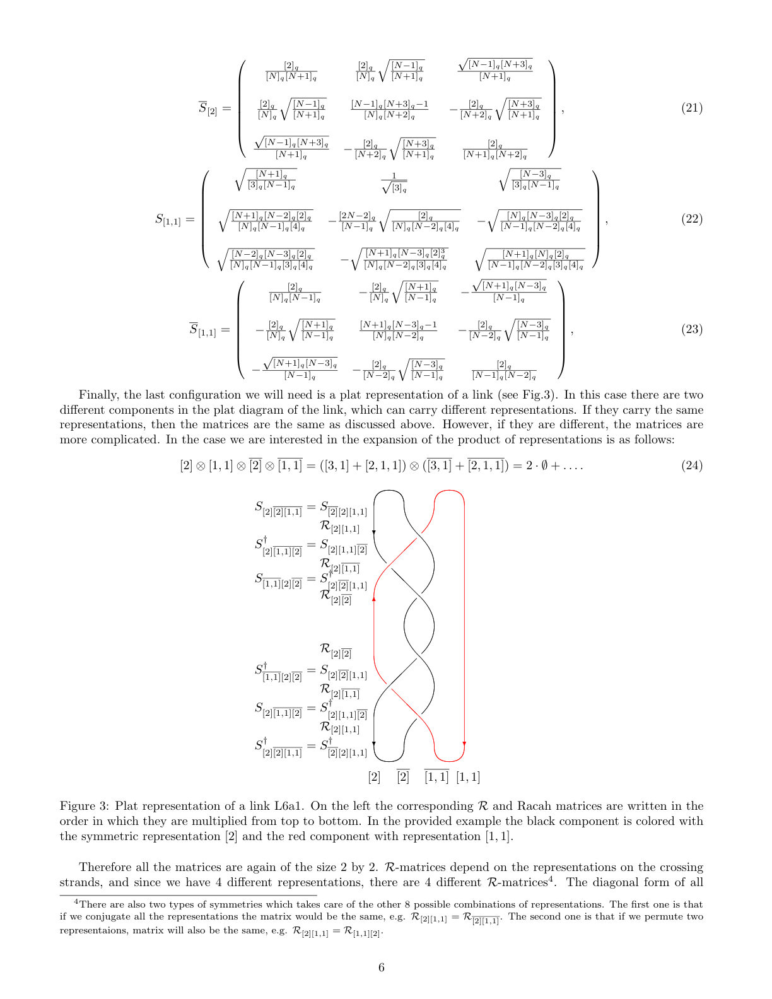
Summary. This paper extends the framework for topological quantum computing from SU(2) to SU(N) anyons. It proposes a cabling method to construct complex entangling gates from simpler ones and provides numerical evidence for high-fidelity braid patterns that minimize leakage into non-computational states.
Why it may be interesting. not directly relevant
Main problem. Generalizing the construction of entangling two-qubit gates from SU(2) anyons to the more complex SU(N) case while addressing the leakage problem into higher-dimensional representations.
Main result. The authors successfully identified specific braid sequences for SU(N) (N=3 to 6) that achieve high-fidelity entangling gates using co-directional and counter-directional cabling techniques.
Method. The study uses the Reshetikhin-Turaev approach, quantum group theory (Uq(su(N))), and a cabling technique to relate higher-representation matrices to fundamental R-matrices, supplemented by numerical brute-force searches for braid patterns.
Model / system. A topological quantum computer model based on 3D SU(N) Chern-Simons gauge theory, where quantum operations are implemented via the braiding of anyonic trajectories.
Key observables. Process probability (fidelity), phase deviation (delta phi), and the entanglement content of the effective operation matrix.
Important parameters / regimes. The rank of the group (N), the Chern-Simons level (k), the quantum parameter (q), and the braid sequence weights.
Assumptions / limitations. Anyon trajectories can be controlled topologically without intersection; the root of unity q is sufficiently large to avoid representation theory complications; and the use of vertical framing for consistency.
Figures summary. Figures illustrate R-matrix crossings, braid/plat representations of knots (trefoil), the cabling process for strands, and visual representations of the identified high-precision braid sequences.
Paper structure. The paper begins by motivating the need for SU(N) gates, establishes the mathematical framework of Chern-Simons theory and quantum groups, details the cabling method for constructing higher-order gates, addresses the leakage and framing problems, and concludes with numerical results for specific SU(N) configurations.
The model of a topological quantum computer is a promising one due to its natural resistance to noise and other errors. Operations in such a computer are implemented by braiding the trajectories of anyons. While it is easy to understand how to build one-qubit operations, two-qubit operations are more difficult. In arXiv:2412.20931 we suggested an approach to build such operations for a topological quantum computer based on SU(2) Chern-Simons theory with arbitrary level using cabling of knots. In this paper we discuss how this approach should be generalized to the SU(N) case, what the differences are, and which new problems arise.
Authors: Rajdeep Rameshchandra Dwivedi, Amitoj Singh Miglani, Vishvendra Singh Poonia
Type: theory · Category: quantum information and computing · PDF: https://arxiv.org/pdf/2605.03056v1
Analysis basis: full PDF text, analyzed in chunks
Topic relevance: methods for driven-dissipative 2/5
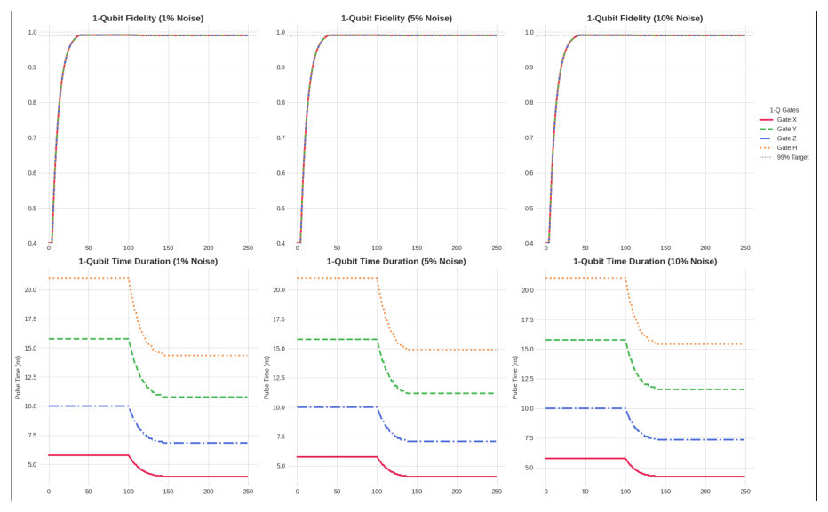
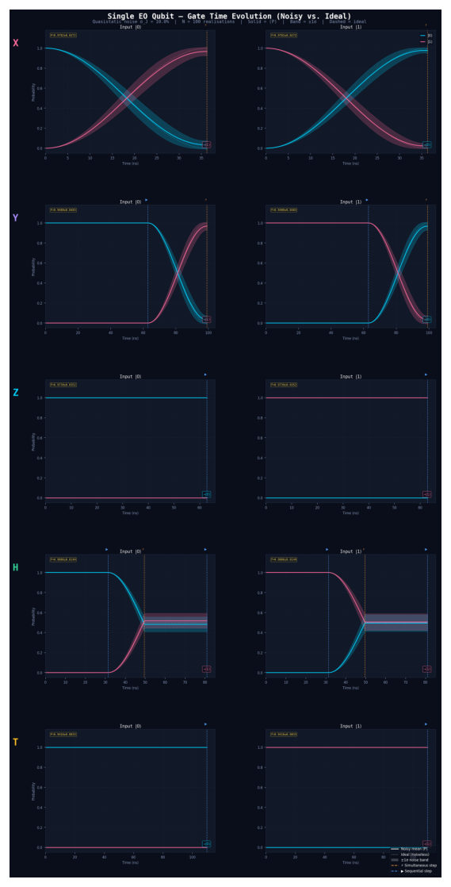
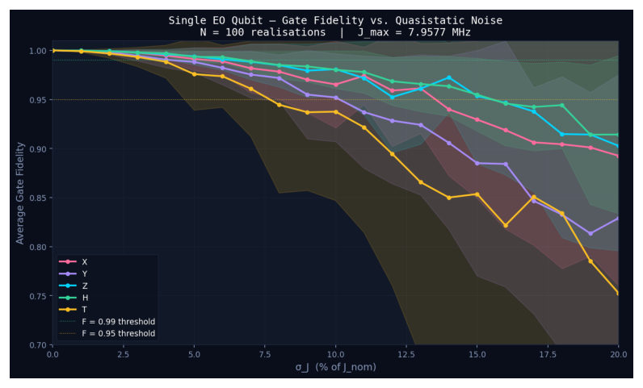
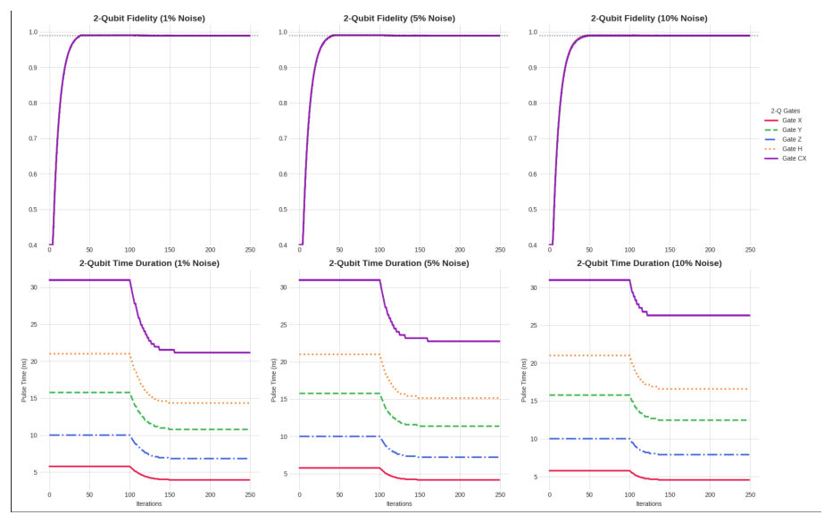
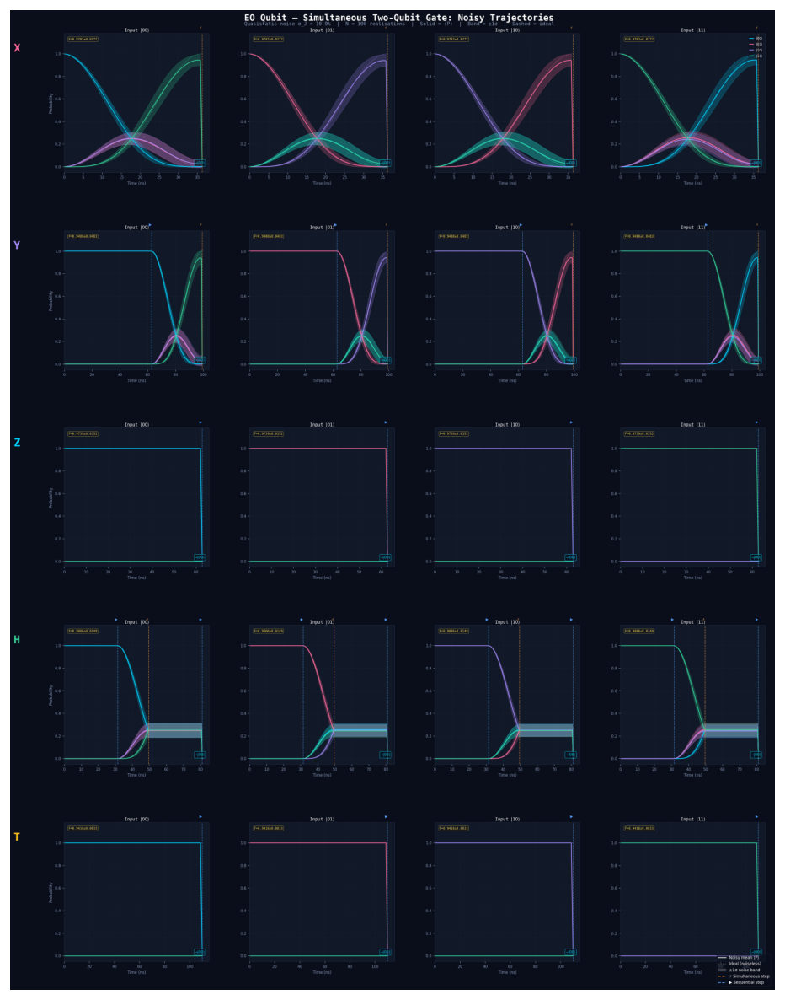
Summary. The paper presents a new machine learning framework using Physics-Informed Neural Networks to optimize control pulses for silicon-based spin qubits. By using a two-stage training process, the method achieves high-fidelity gates while significantly reducing the time required for gate operations. This approach effectively resolves the tension between noise robustness and gate speed without manual parameter tuning.
Why it may be interesting. This work is highly relevant to researchers in open quantum systems as it demonstrates a sophisticated machine learning approach to controlling quantum dynamics under the influence of non-Markovian, quasi-static noise.
Main problem. Optimizing exchange-only silicon spin qubit gate pulses to achieve high fidelity (F >= 0.99) while simultaneously minimizing gate duration to mitigate the effects of charge noise.
Main result. A two-stage PINN framework successfully reduces gate durations by 20-40% while maintaining high fidelity, outperforming analytic baselines and showing high sample efficiency compared to reinforcement learning.
Method. A two-stage Physics-Informed Neural Network (PINN) that first maximizes noise-averaged fidelity at a fixed duration (Stage I) and then progressively compresses the pulse time (Stage II) using a threshold penalty.
Model / system. Exchange-only (EO) spin qubits in Si/SiGe quantum dots, where a logical qubit is encoded in the S=1/2 subspace of three electrons, driven by time-dependent Heisenberg exchange couplings subject to quasi-static Gaussian charge noise.
Key observables. Gate fidelity (F), pulse duration (Tg), and gate-level error/leakage.
Important parameters / regimes. Noise levels (sigma_J/J) of 1%, 5%, and 10%; exchange coupling maximum (J_max) of 100 MHz; fidelity threshold (F_th) of 0.99.
Assumptions / limitations. Charge noise is modeled as quasi-static Gaussian noise that is constant during a single gate but varies across the ensemble.
Figures summary. Figure 1 shows PINN optimization progress (fidelity vs. iteration); Figure 4 displays optimization results for two-qubit gates (fidelity and duration vs. iteration); Figure 5 shows trajectory distortion under noise; Figure 6 shows CX gate evolution.
Paper structure. The paper introduces the problem of the speed-fidelity trade-off in silicon spin qubits, describes the two-stage PINN architecture and loss functions, presents benchmarking results for single and two-qubit gates across various noise levels, and compares the method against RL and analytic baselines.
Exchange-only (EO) spin qubits in silicon realise all-electrical qubit control through pairwise Heisenberg exchange interactions, making them attractive for scalable quantum computation. Their principal vulnerability is charge noise, which couples multiplicatively to the exchange coupling and degrades gate fidelity. We present a \emph{two-stage} Physics-Informed Neural Network (PINN) framework for per-gate pulse optimisation. In \textbf{Stage~I} (iterations~1--100) the PINN maximises the noise-averaged gate fidelity toward a threshold of $\Fth=0.99$; the pulse duration is held fixed at its nominal hardware value. Once the threshold is crossed, \textbf{Stage~II} (iterations~101--250) progressively compresses the total pulse time while maintaining $F\geq\Fth$ via continuous fine-tuning of the pulse-shape parameters. The cost function is a Monte-Carlo ensemble mean-squared error (MSE) averaged over $N_{\rm real}=2000$ quasi-static Gaussian noise realisations drawn fresh at every iteration. We benchmark the framework on the single-qubit gate set $\{X,Y,Z,H\}$ and the two-qubit set $\{X,Y,Z,H,\mathrm{CX}\}$ at noise levels $\sigmaJ/J\in\{1\%,5\%,10\%\}$. All single-qubit gates cross $\Fth$ within the first 100 iterations across all noise levels; Stage~II then reduces pulse durations by 20--40\% from their nominal values. The two-qubit gates follow the same two-phase behaviour, with the CX gate compressing from its nominal \SI{31}{\nano\second} to $\approx\SI{22}{\nano\second}$ at 1\% noise.
Authors: Tian Xue, Jacob P. Covey
Type: theory · Category: quantum information and computing · PDF: https://arxiv.org/pdf/2605.03951v1
Analysis basis: full PDF text, analyzed in chunks
Topic relevance: Rydberg arrays 2/5
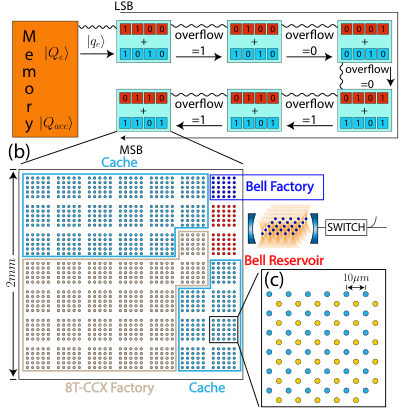
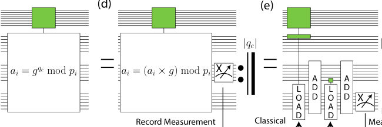
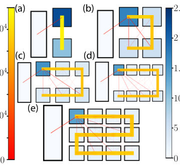
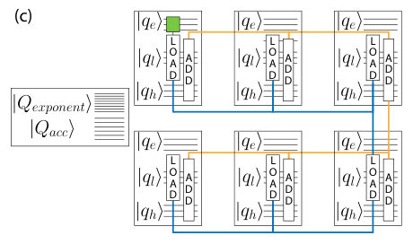
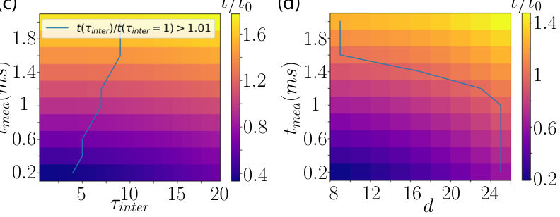
Summary. This paper presents a blueprint for a large-scale modular quantum computer capable of breaking RSA-2048 encryption. By optimizing the distribution of Shor's algorithm across multiple atomic modules, the authors show that the massive communication overhead typically expected from modularity can be largely mitigated.
Why it may be interesting. It provides a critical bridge between abstract quantum algorithms and the physical constraints of emerging neutral-atom platforms, specifically addressing how modularity and interconnect latency impact large-scale fault-tolerant computation.
Main problem. Determining the architectural requirements and resource overhead for factoring 2048-bit RSA integers using a distributed version of Shor's algorithm on a large-scale modular atomic processor.
Main result. Demonstrated that a half-million-qubit modular architecture can factor 2048-bit RSA integers with only a 16% increase in time compared to a monolithic architecture, provided communication rates are sufficiently high.
Method. End-to-end compilation and simulation of the DShor algorithm, utilizing a custom Shor's simulator to track Hilbert trajectories and estimate T-gate counts, communication overhead, and qubit requirements.
Model / system. A modular, CPU-inspired quantum processor consisting of multiple Quantum Processing Units (QPUs) using surface codes and a shared quantum memory using qLDPC codes, interconnected via photonic links or atom transport.
Key observables. Circuit execution time, total physical and logical qubit counts, inter-module communication rate (Bell pairs per second), and T-gate counts.
Important parameters / regimes. RSA bit sizes (1024, 2048, 4096), physical error rates (10^-3 to 10^-4), communication delay ratio (tau), and measurement/QEC cycle times (250 us to 1 ms).
Assumptions / limitations. Assumes realistic estimates for photonic communication rates, uses a hybrid error correction approach (surface code for processing, qLDPC for memory), and approximates logical gate times based on atom movement.
Figures summary. Figure 1 shows the decomposition of modular exponentiation and QPU architecture; Figure 2 and 3 illustrate the DShor algorithmic structure and distributed operations via GHZ states; Figure 4 shows scaling of communications and T-gates; Figure 5 presents circuit time vs. communication cost and scaling analysis.
Paper structure. The paper introduces the DShor algorithm, details the modular hardware architecture and atom-movement protocols, presents a systematic simulation of resource scaling (space and time) for RSA factoring, and concludes with an analysis of the 'free modularization' regime.
Shor's algorithm is one of the most promising applications of quantum computers. However, since $\sim 10^6$ physical qubits are believed to be required for established approaches, the algorithm will need to be distributed across many modules. In this paper, we provide a distributed compilation of Shor's algorithm on a modular atomic processor. We present an end-to-end compilation and optimization strategy that focuses on the interplay between the inter-module communication and the intra-module clock rate. With a half-million-qubit modular atomic processor with a communication rate of $10^5$ Bell pairs per second and a measurement time of 1 ms in a CPU-inspired architecture, we demonstrate that 2048-bit RSA integers can be factored in only 16\% more time than a single-module architecture. Our work presents the first end-to-end analysis and simulation of large-scale integer factorization on modular atomic hardware and it provides a blueprint for the future design of other large-scale modular algorithms.
Authors: Vincenzo Lipardi, Domenica Dibenedetto, Georgios Stamoulis, Mark H. M. Winands
Type: theory · Category: quantum information and computing · PDF: https://arxiv.org/pdf/2605.03932v1
Analysis basis: full PDF text, analyzed in chunks
Topic relevance: entanglement & information structure 2/5
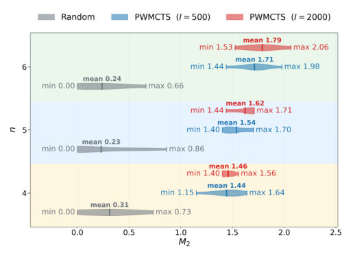
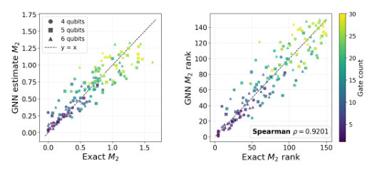
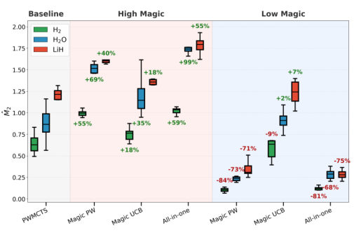
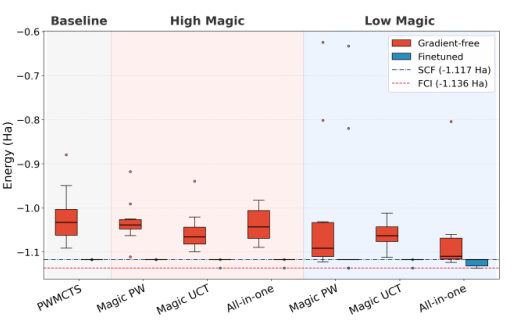
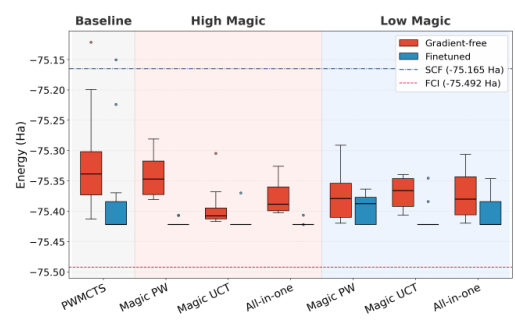
Summary. This paper introduces a new method for designing quantum circuits by using a neural network to predict and control the level of 'magic' or non-classicality during the search process. By biasing the architecture search toward specific magic regimes, the authors achieve better performance in molecular energy estimation and quantum state preparation. This approach provides a way to navigate the complex design space of quantum algorithms more effectively.
Why it may be interesting. not directly relevant
Main problem. The difficulty of automatically designing parameterized quantum circuits (PQCs) that optimize specific objectives while controlling the level of 'magic' (non-stabilizerness) to target quantum advantage regimes.
Main result. The magic-informed QAS technique effectively biases the search toward desired magic levels, improving solution quality for molecular ground-state energy and quantum state approximation, even when the GNN operates on out-of-distribution circuits.
Method. A Monte Carlo Tree Search (MCTS) approach using Progressive Widening (PWMCTS) integrated with a Graph Neural Network (GNN) that estimates the stabilizer 2-Renyi entropy to guide the search.
Model / system. The study focuses on the design of parameterized quantum circuits (PQCs) applied to molecular Hamiltonians (H2, H2O, LiH) and general quantum state approximation tasks.
Key observables. Stabilizer 2-Renlyi entropy (M2), ground-state energy, circuit fidelity, and trace of the Quantum Fisher Information (QFI).
Important parameters / regimes. Magic regimes (low, medium, high), circuit depth, number of qubits, and gate sets including CX, H, Rx, Ry, and Rz.
Assumptions / limitations. The GNN provides a computationally efficient but approximate estimation of magic, and the magic-induced bias does not significantly constrain the search for optimal rewards.
Figures summary. Figure 1 shows GNN prediction accuracy and Spearman rank correlation for M2; Figure 2 shows the distribution of M2 in random vs. optimized circuits; Figure 7 and 8 show M2 values and QFI matrix traces for state approximation.
Paper structure. The paper introduces the QAS challenge, proposes the magic-informed MCTS framework using GNNs, evaluates the GNN's ability to estimate magic, benchmarks the method on molecular energy and state approximation tasks, and discusses implications for trainability and scalability.
Nonstabilizerness, commonly referred to as magic, is a fundamental resource underpinning quantum advantage. In this paper, we propose a magic-informed quantum architecture search (QAS) technique that enables control over a quantum resource within the general framework of circuit design. Inspired by the AlphaGo approach, we tackle the problem with a Monte Carlo Tree Search technique equipped with a Graph Neural Network (GNN) that estimates the magic of candidate quantum circuits. The GNN model induces a magic-based bias that steers the search toward either high- or low-magic regimes, depending on the target objective. We benchmark the proposed magic-informed QAS technique on both the structured ground-state energy problem and on the more general quantum state approximation problem, spanning different sizes and target magic levels. Experimental results show that the proposed technique effectively influences the magic across the search tree and notably also on the resulting final circuit, even in regimes where the GNN operates on out-of-distribution instances. Although introducing a problem-agnostic magic bias could, in principle, constrain the search dynamics, we observe consistent improvements in solution quality across all problems tested.
Authors: Andrea Kouta Dagnino, Attila Szabó
Type: theory · Category: statistical mechanics · PDF: https://arxiv.org/pdf/2605.03001v1
Analysis basis: full PDF text, analyzed in chunks
Topic relevance: entanglement & information structure 2/5
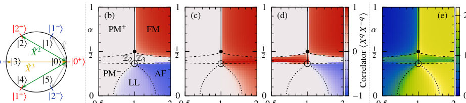
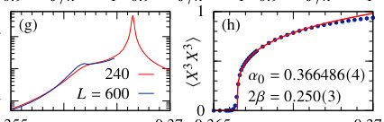
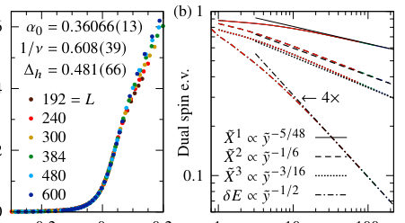
Summary. This paper investigates a generalized Z6 clock chain to uncover new multicritical points. It demonstrates that Z6 parafermion criticality can emerge in systems far from integrable points through the decoupling of Ising and Potts degrees of freedom.
Why it may be interesting. not directly relevant
Main problem. The study aims to identify the universality classes of multicritical points in a generalized Z6 clock chain and determine if Z6 parafermions emerge far from integrable points.
Main result. The authors conclusively identify a Z6 parafermion multicritical point at alpha approx 0.3606 and demonstrate that the model features a decoupled point where Ising and three-state Potts degrees of freedom are independent.
Method. Large-scale DMRG simulations, boundary CFT analysis, level spectroscopy, and conformal perturbation theory were used to analyze the phase diagram and scaling dimensions.
Model / system. A generalized six-state (Z6) clock chain that interpolates between the Z6 clock model and the Z6 Potts model via a tuning parameter alpha.
Key observables. Correlation functions (standard and string), half-chain entanglement entropy (vN), fidelity susceptibility, central charge (c), and deviation from self-duality.
Important parameters / regimes. Tuning parameter alpha, coupling ratio J/h, and system size L.
Assumptions / limitations. The analysis assumes the validity of the conformal field theory framework for identifying universality classes and relies on the accuracy of the DMRG truncation error.
Figures summary. Figure 1 shows the interplay of correlators and entropy under duality; Figure 2 displays behavior near the spin-flop transition; Figure 3 shows the confluence region near the multicritical point; Figure 4/5 illustrate entanglement entropy and the effective Hamiltonian construction.
Paper structure. The paper introduces the generalized Z6 model, explores the phase diagram and decoupling at alpha=1/2, uses DMRG and CFT to identify the Z6 parafermion point, and discusses the implications of parafermionic emergence far from integrability.
We introduce a generalised six-state clock chain that interpolates between the clock and Potts models via a multicritical point described by decoupled Ising and three-state Potts models. We find that this decoupling extends into stable phases that break only $\mathbb{Z}_2$ or $\mathbb{Z}_3$ symmetry. We also use boundary CFT analysis and level spectroscopy to conclusively identify a $\mathbb{Z}_6$ parafermion multicritical point terminating the clock model Luttinger-liquid phase. Our work shows that parafermions emerge far from integrability, even in systems with intertwined Ising and three-state Potts orders.
Authors: Shuhei Ohyama, Takamasa Ando, Ryan Thorngren
Type: theory · Category: strongly correlated electrons · PDF: https://arxiv.org/pdf/2605.03891v1
Analysis basis: full PDF text, analyzed in chunks
Topic relevance: entanglement & information structure 2/5
Summary. This paper explores how to create and identify non-trivial families of topological phases by continuously varying Hamiltonian parameters. It introduces new mechanisms like anyon pumping and uses boundary algebra to prove that these families cannot be continuously deformed into trivial ones.
Why it may be interesting. It provides a deep theoretical framework for understanding how topological properties can be manipulated via continuous parameter changes, which is relevant to the control of anyonic defects in many-body systems.
Main problem. The paper investigates the construction and non-contractibility of parameterized families of topologically ordered states, specifically focusing on 1-parameter and 2-parameter families within the toric code phase.
Main result. The authors demonstrate the existence of non-contractible $S^1$ and $S^2$ families of Hamiltonians using topological pumping of $em$-exchange defects and higher-order anyon pumping as diagnostics.
Method. The study employs symmetry interpolation, boundary algebra methods (analyzing automorphisms of boundary operators), and gauging of 1-form symmetries to prove non-triviality.
Model / system. The primary model is the Toric Code phase on a square lattice, including extensions like the crystalline Toric Code and the $D_8$ quantum double model.
Key observables. Topological pumping of anyons, $em$-exchange defects, corner-localized anyon modes, and boundary algebra indices.
Important parameters / regimes. Interpolation parameters $ heta$ for $S^1$ families and $ heta_1, \dots, heta_n$ for $T^n$ families.
Assumptions / limitations. The study focuses on non-chiral states and assumes adiabatic evolution during the pumping process.
Figures summary. Figure 1 shows $e$ and $m$ anyons in the toric code; Figure 2 illustrates the $U_{em}$ circuit action on vertex stabilizers.
Paper structure. The paper progresses from constructing 1-parameter $S^1$ families via $em$-exchange to 2-parameter $S^2$ families using 'pump of a pump' mechanisms, concluding with higher-order anyon pumps in crystalline models and a classification using the Picard 2-group.
Within the toric-code phase, we study parameterized families of topologically ordered states. We construct $1$- and $2$-parameter families of local Hamiltonians and confirm their non-triviality via topological pumping. For the $1$-parameter family, we show that the $em$-exchange defect is pumped into the bond Hilbert space of a tensor-network representation. For the $2$-parameter case, we construct a ``pump of a pump'' that transports an $S^1$-family of a system in one lower spatial dimension. Using similar methods, we also present a $1$-parameter family with a higher-order anyon pump that produces corner-localized anyon modes. These constructions provide explicit lattice realizations and concrete diagnostics of family-level topology. We use recently developed boundary algebra methods to study the non-triviality of these families.
Authors: M. Isabel Franco Garrido, André Chailloux
Type: theory · Category: quantum information and computing · PDF: https://arxiv.org/pdf/2605.03972v1
Analysis basis: full PDF text, analyzed in chunks
Topic relevance: quantum measurements 2/5
Summary. This paper explores a potential quantum algorithmic approach to solving the discrete logarithm problem using Regev's reduction applied to Reed-Solomon codes. It concludes that while the problem is solvable in principle via the Pretty Good Measurement, existing efficient decoders cannot yet reach the required error threshold. The work highlights that the main obstacle to this algorithm is the computational efficiency of the decoder rather than theoretical solvability.
Why it may be interesting. not directly relevant
Main problem. Investigating whether Regev's reduction can serve as an efficient quantum algorithm for the discrete logarithm problem (DLOG) in finite abelian groups by mapping it to Reed-Solomon code decoding.
Main result. The authors prove that while the Pretty Good Measurement can solve the required decoding instances unconditionally, current efficient quantum and classical decoders fall short of the necessary threshold by a constant factor, identifying efficiency as the primary bottleneck.
Method. The study employs mathematical reductions (Cheng-Wan and Regev), quantum Fourier transforms, and an analysis of various decoding algorithms including Berlekamp-Welch, Guruswami-Sudan, and Unambiguous State Discrimination.
Model / system. The mathematical framework involves finite abelian groups, finite fields, and Reed-Solomon codes within the Hamming metric, specifically focusing on the Bounded Distance Decoding (BDD) and Quantum Decoding Problem (QDP) frameworks.
Key observables. Decoding radius, error fraction (tau), and the success probability of the quantum decoder.
Important parameters / regimes. Low-rate and asymptotically zero-rate regimes for Reed-Solomon codes, the decoding radius threshold, and the characteristic of the finite field.
Assumptions / limitations. The analysis assumes that a QDP decoder for the dual code succeeds on the structured instances produced by the Cheng-Wan reduction.
Figures summary. Figure 1 illustrates Regev's reduction from a code decoder to a quantum solver for the dual code; Figure 2 illustrates the refined Reamb-type reduction using the QDP framework.
Paper structure. The paper begins by generalizing the Cheng-Wan reduction to abelian groups, then proves NP-hardness for Reed-Solomon BDD, evaluates existing decoders against the required DLOG threshold, and concludes by demonstrating that the Pretty Good Measurement provides an unconditional but potentially inefficient solution.
We revisit the reduction of Cheng and Wan, which transforms instances of the discrete logarithm problem (DLOG) over finite fields into a decoding problem for Reed--Solomon codes, and study how Regev's reduction can be used to solve these instances. Regev's reduction turns a decoder for a code into a quantum solver for a decoding problem on the dual code. The quantum advantage depends on the dual problem being classically hard, which has proven difficult to establish. The Cheng--Wan reduction offers a natural source of such instances: solving them would solve discrete logarithm. Since Shor's algorithm already solves discrete logarithm, the goal is not a new quantum speedup but to understand whether Regev's reduction, applied to a problem we have independent reasons to believe is hard, can solve discrete logarithm, and if not, where it falls short. We generalize the hardness consequence of the Cheng--Wan reduction for Reed--Solomon bounded distance decoding -- from solving DLOG in $\mathbb{F}_{q^h}^\times$ to solving DLOG in finite abelian groups, and we prove that bounded distance decoding for Reed--Solomon codes is NP-hard even at asymptotically zero rate, though the known NP-hard radius lies well above the Cheng--Wan decoding radius. We then carry out Regev's reduction on the Cheng--Wan instances and evaluate it with known efficient decoders. All fall short of the Cheng--Wan threshold by a constant factor, and under an assumption on the Cheng--Wan instances we identify the QDP parameter a decoder would need to reach in order to solve discrete logarithm. The obstruction is one of efficiency rather than solvability: the Pretty Good Measurement solves the corresponding decoding problem on every instance, including NP-hard instances, but its implementation requires exponential resources in general.
Authors: Anand Aruna Kumar
Type: theory · Category: other · PDF: https://arxiv.org/pdf/2605.03324v1
Analysis basis: full PDF text, analyzed in chunks
Topic relevance: interference shaping light 2/5
Summary. This paper explores the nonlinear superposition of Bohm-Madelung waves, showing that despite the underlying nonlinear coupling between amplitude and phase, a linear-like spectral structure emerges in near-degenerate systems. By using mathematical tools like the Jacobi-Anger expansion, the authors map these complex dynamics onto recognizable patterns like Fresnel diffraction. This establishes a consistent bridge between the Bohmian and Schrödinger representations of quantum mechanics.
Why it may be interesting. It provides a fundamental theoretical link between the nonlinear Bohmian hydrodynamic picture and the standard linear Schrödinger picture, which is relevant for understanding the foundations of quantum mechanics and nonlinear wave propagation.
Main problem. Investigating how the linear superposition principle of the Schrödinger equation emerges from the inherently nonlinear amplitude and phase dynamics of the Bohm-Madelung formulation.
Main result. The authors demonstrate that in the quasi-coherent regime of near-degenerate states, a linear spectral structure re-emerges via a Fourier-Bessel representation, effectively mapping nonlinear Bohmian dynamics onto a structure compatible with linear quantum mechanics.
Method. The study uses an amplitude-phase decomposition of near-degenerate branches, applying the Jacobi-Anger expansion and reducing the dynamics to Ermakov-Pinney and Mathieu-Hill type equations.
Model / system. The model consists of stationary quantum states in the Bohm-Madelung (polar) representation, specifically applied to one-dimensional and two-dimensional configurations like Ermakov apertures and spatially separated sources.
Key observables. Momentum distribution (Bessel-weighted sidebands), local intensity, phase structure (quadratic chirp modes), and interference patterns (symmetric and antisymmetric combinations).
Important parameters / regimes. Energy splitting (delta E), modulation parameter (epsilon), Wronskian invariant (W), and the near-degenerate/quasi-coherent regime.
Assumptions / limitations. The derivation assumes stationary quantum states, near-degeneracy between branches, and small-aperture/small-separation limits.
Paper structure. The paper defines the nonlinear Bohm-Madelung coupling, introduces a near-degenerate decomposition, derives the hierarchical Ermakov-Pinney and Mathieu-type dynamics, demonstrates the emergence of linear spectral structures via Bessel expansions, and applies the framework to aperture geometries and interference patterns.
We examine the problem of superposition of stationary quantum states in the Bohm Madelung formulation, where amplitude and phase obey coupled nonlinear equations and linear superposition is not generally valid. In the quasi-coherent regime of near degenerate stationary branches, the dynamics separates into a hierarchical structure: the mean amplitude evolves according to an Ermakov-Pinney equation governed by a Wronskian invariant, while the difference amplitude obeys a parametrically driven Hill Mathieu equation determined by the energy splitting. Despite this intrinsic nonlinearity, a linear spectral structure re-emerges through a Jacobi Anger expansion, yielding a Fourier Bessel representation with square-summable coefficients and translation covariant weights. Applications to aperture geometries and spatially separated sources demonstrate how amplitude modulation and phase induced sidebands organise interference patterns within a nonlinear amplitude phase framework. Keywords Bohm Madelung, Ermakov Pinney, nonlinear superposition, quasi coherent states, Mathieu Hill, Fourier Bessel, quantum interference.
Authors: Aaron Kleger, Nikolay Gnezdilov, Rufus Boyack
Type: theory · Category: strongly correlated electrons · PDF: https://arxiv.org/pdf/2605.03013v1
Analysis basis: full PDF text, analyzed in chunks
Topic relevance: Keldysh / 2PI / non-Gaussian methods 2/5
Summary. This paper provides a microscopic theoretical framework for understanding 'bad metals' like cuprates and twisted bilayer graphene. By using a Yukawa-SYK model, the authors show how transport can break fundamental limits like the Mott-Ioffe-Regel bound. The work establishes a unified description of the crossover between strange-metal, bad-metal, and superconducting phases.
Why it may be interesting. not directly relevant
Main problem. Understanding the transport and thermodynamic properties of incoherent 'bad metals' where Fermi-liquid theory fails and standard transport bounds are violated.
Main result. The study establishes a microscopic model that demonstrates violations of the Mott-IOLoffe-Regel and KSS bounds, identifies a non-Boltzmann transport relation, and shows bosonic self-tuning to a quantum critical point.
Method. A non-perturbative approach using the large-N limit of a (2+1)D Yukawa-SYK model, employing saddle-point equations and the Kubo formula for transport coefficients.
Model / system. A (2+1)-dimensional Yukawa-Sachdev-Ye-Kitaev (Y-SYK) model consisting of N electrons coupled to N bosons with spatially random coupling constants.
Key observables. Resistivity, electrical conductivity, shear viscosity to entropy density ratio (eta/s), charge diffusivity, and superconducting critical temperature (Tc).
Important parameters / regimes. Electronic bandwidth (Lambda), temperature (T), coupling strength (lambda), bosonic UV cutoff (omega_D), and impurity scattering rate (Omega_0).
Assumptions / limitations. Large-N limit, momentum-independent self-energies due to local disorder, and use of natural units (hbar = kB = 1).
Figures summary. Plots of resistivity versus temperature for various coupling strengths, showing the transition from strange-metal to bad-metal regimes.
Paper structure. The paper introduces the Y-SYK model, derives self-consistent saddle-point equations, analyzes transport regimes (Strange Metal, Bad Metal, Thermal Incoherent Metal), investigates the impact of disorder and self-tuning, and concludes with the derivation of superconducting properties.
Numerous unconventional superconductors such as cuprates, heavy-fermions, and twisted-bilayer graphene exhibit incoherent metallic transport above the superconducting critical temperature. This phenomenon cannot be described with Fermi-liquid theory and has presented a significant theoretical challenge to overcome. We utilize the two-dimensional Yukawa-SYK model of fermions with spatially random coupling to quantum-critical bosons to study transport in a manner which is non-perturbative in the coupling strength. Our work provides a microscopic model of quantum-critical incoherent metals and their concomitant properties, including a non-Boltzmann transport formula between resistivity and quasi-particle lifetime, violation of the Mott-Ioffe-Regel resistivity bound, and violation of the Kovtun-Son-Starinets shear viscosity to entropy density bound.
← Index · ← Previous · Next →